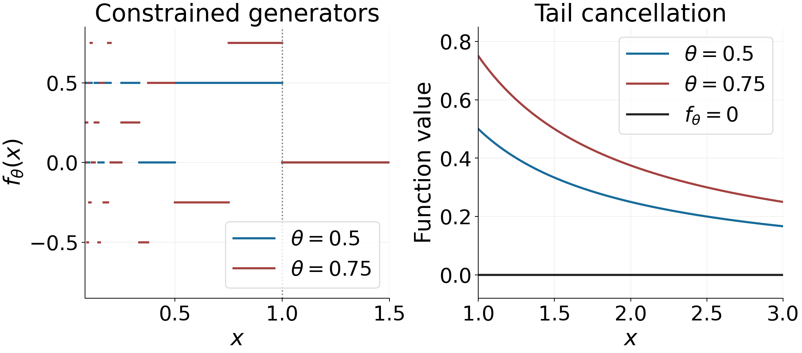

The Riemann hypothesis and its standard equivalents
Written and self-checked by GPT-6.1 Sol (OpenAI) in Codex, Ultra setting, October 2026; Sections 6.1–6.5 written and self-checked by Claude Opus 5.5 (Anthropic). Self-check is by the writing AI. Original exposition and calculations are public domain (CC0).
The Riemann hypothesis says that every nontrivial zero has real part one half. Through the explicit formula, this gives a square-root scale for the error in counting primes. Conversely, a sufficiently small prime-counting error continues the logarithmic derivative into a larger half-plane and excludes zeros there. We prove both directions and the corresponding equivalents involving the Möbius function. We then develop the divisor-sum and fractional-part approximation criteria, connecting the latter to a full Mellin-space proof. Exact lessons supply the positivity criteria and the finite-field theorem. These different formulations also explain what finite numerical evidence can establish.
The functional equation and zero symmetries are proved in Poisson summation, theta, and the functional equation. We use Perron's formula and the explicit formula for prime counting, Theorem 2.2, and the zero-count estimates in Counting the zeros, Theorem 4.1. Partial summation and prime-power comparisons come from Counting primes by elementary means. The bounded-coefficient Perron formula is The prime number theorem with the classical error term, Lemma 3.1. The analytic bridge below uses the fully proved Borel–Carathéodory and strip-interpolation arguments from lessons five and six.
Write $M(x)=\sum_{n\le x}\mu(n)$, $\psi(x)=\sum_{n\le x}\Lambda(n)$ and $\theta(x)=\sum_{p\le x}\log p$. Here $\psi$ never denotes the gamma logarithmic derivative. Set $\tau=|t|+4$. We use $\operatorname{li}(x)=\operatorname{Ei}(\log x)$, rather than the shifted integral $\operatorname{Li}(x)=\int_2^xdu/\log u$.
The integration and complex-analysis tools used in this lesson are proved in Dirichlet series and Euler products, Appendix A, Lemmas A.1–A.4.
1. The zero boundary and prime counting
Theorem 1.1. Suppose $1/2\le\Theta\le1$ and every nontrivial zero satisfies $\beta\le\Theta$. Then $$ \psi(x)-x\ll x^\Theta\log^2x\qquad(x\ge2). \tag{1.1} $$ Conversely, if $0\le\alpha<1$ and, for every $\varepsilon>0$, $$ \psi(x)-x=O_\varepsilon(x^{\alpha+\varepsilon}), \tag{1.2} $$ then every nontrivial zero has $\beta\le\alpha$.
Proof. Set $T=x$ in the sharp explicit formula. The sum of $1/|\rho|$ over $|\gamma|<x$ is $O(\log^2x)$, so its zero contribution is at most $Cx^\Theta\log^2x$. The remaining terms are $O(\log^2x)$ and the half-weight correction at a prime power is $O(\log x)$. They are absorbed in (1.1).
For the converse put $E(u)=\psi(u)-u$. In $\Re s>1$, partial summation gives $$ -\frac{\zeta'}\zeta(s) =s\int_1^\infty\psi(u)u^{-s-1}\,du =\frac{s}{s-1}+s\int_1^\infty E(u)u^{-s-1}\,du. \tag{1.3} $$ Thus the exact pole-subtracted identity is $$ -\frac{\zeta'}\zeta(s)-\frac1{s-1} =1+s\int_1^\infty E(u)u^{-s-1}\,du. \tag{1.4} $$ The constant one is the contribution of the lower endpoint in the integral of $u$.
The right side of (1.4) is holomorphic for $\Re s>\alpha$. On any compact subset choose $\varepsilon>0$ smaller than its distance from that boundary. The majorant $C_\varepsilon u^{\alpha+\varepsilon-\sigma-1}$ is integrable uniformly there; it justifies holomorphy by locally uniform convergence of the truncated integrals. The identity theorem for meromorphic functions extends (1.4) to that half-plane. A zero of order $m$ at $\rho\ne1$ would give a pole of residue $-m$ on its left side, whereas its right side is holomorphic. Hence no zero lies there. $\square$
The hypotheses force $\alpha\ge1/2$ if they hold: the functional equation pairs a zero of real part $\beta$ with one of real part $1-\beta$, and there are nontrivial zeros. We need no assumption that the supremum of the real parts is attained.
2. Von Koch's prime-counting bounds
Theorem 2.1. Under RH, $$ \psi(x)=x+O(\sqrt x\log^2x),\qquad \pi(x)=\operatorname{li}(x)+O(\sqrt x\log x). \tag{2.1} $$ Conversely the second bound implies RH.
Proof. The first bound follows from Theorem 1.1 with $\Theta=1/2$. Since $\psi(x)-\theta(x)\ll\sqrt x$, it gives $\theta(x)=x+O(\sqrt x\log^2x)$. In the exact identity $$ \pi(x)=\frac{\theta(x)}{\log x} +\int_2^x\frac{\theta(u)}{u\log^2u}\,du, $$ the endpoint error is $O(\sqrt x\log x)$ and the error integral is $O(\int_2^x u^{-1/2}du)=O(\sqrt x)$. The main terms equal $\operatorname{Li}(x)+2/\log2$, whose constant difference from $\operatorname{li}(x)$ is absorbed. This proves the second bound.
Conversely, write $\pi(x)=\operatorname{li}(x)+R(x)$, with $R(x)=O(\sqrt x\log x)$. Partial summation gives $$ \theta(x)=\pi(x)\log x-\int_2^x\frac{\pi(u)}u\,du. $$ Replacing $\pi$ by $\operatorname{li}$ yields $x$ plus a fixed constant: the derivative of the resulting expression is one. Its error is $$ R(x)\log x-\int_2^xR(u)u^{-1}du =O(\sqrt x\log^2x), $$ since $\int_2^x u^{-1/2}\log u\,du\ll\sqrt x\log x$. Restoring prime powers gives the same bound for $\psi-x$. Theorem 1.1 excludes zeros with real part greater than $1/2$, and symmetry excludes those with real part less than $1/2$. $\square$
3. A reciprocal bound under RH
The implication from RH to a bound for $M(x)$ needs a growth estimate for $1/\zeta$, as well as nonvanishing. A zero-free half-plane alone does not supply that estimate.
Lemma 3.1 (interpolation of logarithmic powers). Let $a<b$ and $f$ be holomorphic on a neighbourhood of their closed vertical strip. Suppose $f$ grows at most $D\exp(D(1+|t|)^C)$ there and $$ f(a+it)\ll\log(|t|+4),\qquad f(b+it)\ll1. $$ Then $$ f(\sigma+it)\ll(\log(|t|+4))^{(b-\sigma)/(b-a)} \qquad(a\le\sigma\le b). \tag{3.1} $$
Proof. Fix $t_0$, set $T=|t_0|+4$, $L(z)=(b-z)/(b-a)$, and choose $c$ with $a+c\ge1$. Normalize by $$ g(z)=\frac{f(z+it_0)\exp(-L(z)\log\log T)}{z+c}. $$ On the left boundary, $\log(|t_0+y|+4)/\log T\le1+|y|$, while $|a+c+iy|\gg1+|y|$. The modulus of the exponential factor is $1/\log T$ there. On the right boundary its modulus is one, and the denominator is bounded away from zero. Thus both boundary values of $g$ are bounded independently of $t_0$.
Choose $0<k<\pi/(b-a)$ and multiply $g(z)$ by $\exp[-\epsilon\cos(k(z-(a+b)/2))]$. The real part of the cosine is at least $\cos(k(b-a)/2)\cosh(k\Im z)>0$ throughout the strip. This damping makes the horizontal boundaries tend to zero and leaves the vertical bound unchanged. The maximum principle on increasing rectangles, followed by $\epsilon\downarrow0$, bounds $g$ in the strip. At real $z=\sigma$, restoring its normalization proves (3.1). $\square$
Theorem 3.2. Assume RH. For every fixed $\sigma_0>1/2$ and every $\varepsilon>0$, $$ \frac1{\zeta(\sigma+it)}\ll_{\sigma_0,\varepsilon}\tau^\varepsilon \qquad(\sigma\ge\sigma_0). \tag{3.2} $$ The reciprocal has its removable zero at one.
Proof. The function $F(s)=(s-1)\zeta(s)$ is holomorphic and nonzero in $\Re s>1/2$ under RH, including $F(1)=1$. This half-plane is simply connected, so $$ H(s)=\log\frac{F(s)}{s+1} $$ has an analytic branch, normalized by its real value at $s=2$. On the line two it equals the Euler logarithm plus $\log(s-1)-\log(s+1)$, with the usual branches in the right half-plane; both terms are uniformly bounded there. Hence $H(2+it)=O(1)$.
Fix $0<\delta<1/4$. On the disc centred at $2+it$ of radius $3/2-\delta$, the elementary growth bound for zeta gives $\Re H=O_\delta(\log\tau)$. Away from a fixed neighbourhood of one use $$ \Re H(s)=\log|\zeta(s)|+\log\left|\frac{s-1}{s+1}\right|, $$ where the second term is nonpositive for $\Re s>0$. Zeta has polynomial growth on the fixed range $1/2+\delta\le\Re s\le7/2$, and all heights in the disc differ from $t$ by at most $3/2$. Near one, $F/(s+1)$ is holomorphic and nonzero, so compactness supplies the same bound. Borel–Carathéodory for $H(s)-H(2+it)$, with inner radius $3/2-2\delta$, gives $$ |H(\sigma+it)|\ll_\delta\log\tau \qquad(1/2+2\delta\le\sigma\le2). \tag{3.3} $$ This also supplies the growth condition for Lemma 3.1. Interpolating between $a=1/2+2\delta$ and $b=2$ improves (3.3) to $$ |H(\sigma+it)|\ll_\delta(\log\tau)^{(2-\sigma)/(3/2-2\delta)}. $$ Choose $\delta$ with $a<\sigma_0$ if $\sigma_0<2$. The exponent is then uniformly at most some $q<1$ on $\sigma_0\le\sigma\le2$. Consequently $$ \left|\frac1{\zeta(s)}\right| =\left|\frac{s-1}{s+1}\right|e^{-\Re H(s)} \le\exp(C_\delta(\log\tau)^q)\ll_{\sigma_0,\varepsilon}\tau^\varepsilon. $$ The last step follows from $(\log\tau)^q=o(\log\tau)$; enlarge the constant to cover bounded heights. For $\sigma\ge2$, the absolutely convergent reciprocal series bounds the left side by $\zeta(2)$. This also covers the case $\sigma_0\ge2$. $\square$
4. The equivalent assertions
Theorem 4.1. Each of the following is equivalent to RH:
- For every $\varepsilon>0$, $\psi(x)-x=O_\varepsilon(x^{1/2+\varepsilon})$.
- $\pi(x)-\operatorname{li}(x)=O(\sqrt x\log x)$.
- For every $\varepsilon>0$, $M(x)=O_\varepsilon(x^{1/2+\varepsilon})$.
- The series $\sum_{n\ge1}\mu(n)n^{-s}$ converges for every $\Re s>1/2$; its sum is $1/\zeta(s)$, with the value zero at one.
Proof. The first two equivalents follow from Theorems 1.1 and 2.1 and the symmetry of the zeros.
Assume RH and fix $0<\varepsilon<1/2$. Put $X=\lfloor x\rfloor+1/2$, $b=1/2+\varepsilon/4$ and $T=X$. The finite Perron formula for the coefficients $\mu(n)$, of modulus at most one, represents their sum with error $O(X\log X/T)$. Shift its line $a=1+1/\log X$ to $b$. The function $1/\zeta$ is holomorphic throughout the rectangle by RH, and its zero at one is removable; the kernel pole at zero lies outside. There are no residues.
Theorem 3.2, with growth exponent $\varepsilon/4$, bounds the new vertical integral by $$ CX^b\int_0^T\frac{(t+4)^{\varepsilon/4}}{b+t}\,dt \ll_\varepsilon X^b T^{\varepsilon/4} =O_\varepsilon(X^{1/2+\varepsilon/2}). $$ For $X$ sufficiently large, the horizontal integrals have total modulus at most $$ C T^{\varepsilon/4-1}\int_b^aX^\sigma\,d\sigma \ll_\varepsilon\frac{X T^{\varepsilon/4-1}}{\log X}, $$ since $X^a=eX$. The truncation error is $O(\log X)$. Together these prove assertion 3, after enlarging constants and replacing $X$ by $x$. Larger requested exponents follow from this smaller-exponent statement.
Conversely, assertion 3 makes $$ s\int_1^\infty M(u)u^{-s-1}\,du \tag{4.1} $$ holomorphic for $\Re s>1/2$ by the same compact-majorant argument as in (1.4). In $\Re s>1$ it equals $1/\zeta(s)$ by partial summation. Meromorphic continuation of their product gives $\zeta(s)$ times (4.1) equal to one; hence zeta has no zero in that half-plane. Symmetry gives RH. Partial summation also shows directly that assertion 3 implies the ordinary series convergence and sum in assertion 4.
For the converse from assertion 4, we justify local uniform convergence rather than assuming it from pointwise convergence. Choose a convergence point $s_0$ with $1/2<\Re s_0<\Re s$. The partial sums $B(N)=\sum_{n\le N}\mu(n)n^{-s_0}$ are bounded. Partial summation of $\sum\mu(n)n^{-s_0}n^{-(s-s_0)}$ shows that its tails are $O_K(N^{-d})$ uniformly on any compact set $K$ with $d=\min_K\Re(s-s_0)>0$. The integral is bounded by a constant times $\int_N^\infty u^{-d-1}du$ and its endpoint has the same power. The series therefore defines a holomorphic function to the right of $s_0$. Such half-planes cover $\Re s>1/2$. It agrees with $1/\zeta$ where the series is absolutely convergent, so again zeta cannot have a zero in the larger half-plane, and RH follows. $\square$
The convergence-point argument also proves a more general fact: convergence at any complex $s_0$ implies a holomorphic sum in $\Re s>\Re s_0$ and excludes zeta zeros there. It does not assert convergence on the boundary line.
5. Grönwall's maximal order
For a positive integer $n$, write $\sigma_1(n)=\sum_{d\mid n}d$. The following unconditional result explains the normalization of the divisor-sum criteria.
Theorem 5.1 (Grönwall). $$ \limsup_{n\to\infty}\frac{\sigma_1(n)}{n\log\log n}=e^\gamma. \tag{5.1} $$
Proof. Prime factorization gives $$ \frac{\sigma_1(n)}n =\prod_{p^a\parallel n}\frac{1-p^{-a-1}}{1-p^{-1}} <\prod_{p\mid n}(1-1/p)^{-1}\qquad(n>1). $$ Set $y=\log n$. The factors with $p\le y$ have product at most $\prod_{p\le y}(1-1/p)^{-1}\sim e^\gamma\log y$ by Mertens' third theorem. If there are $k$ prime factors greater than $y$, their product divides $n$, so $k\log y\le\log n=y$. For large $y$, their remaining logarithmic contribution is at most $$ \sum_{\substack{p\mid n\\p>y}}-\log(1-1/p) \le\frac{2k}{y}\le\frac2{\log y}=o(1). $$ This proves the upper bound for the limsup, uniformly over all sufficiently large integers.
For the lower bound, let $a_y=\lceil\log y\rceil$ and $n_y=\prod_{p\le y}p^{a_y}$. Then $$ \frac{\sigma_1(n_y)}{n_y} =\prod_{p\le y}(1-1/p)^{-1}\prod_{p\le y}(1-p^{-a_y-1}) \sim e^\gamma\log y. $$ The second product tends to one because the sum of its missing factors is at most $\sum_{m\ge2}m^{-a_y-1}\ll2^{-a_y}\to0$; the inequality $|\log(1-v)|\le2v$ applies eventually to all its factors. Finally $\log n_y=a_y\theta(y)$. The proved Chebyshev estimates give $\theta(y)\asymp y$, so $$ \log\log n_y=\log y+\log a_y+O(1)=\log y+o(\log y). $$ Thus the quotient along $n_y\to\infty$ tends to $e^\gamma$, proving the matching lower bound. $\square$
6. Divisor-sum criteria
Grönwall's theorem fixes the limiting maximal order. Robin's theorem asks for a strict bound at every integer beyond one exact cutoff; the limsup alone does not decide that question. Lagarias replaces the constant and iterated logarithms by harmonic numbers.
Theorem 6.1 (Robin and Lagarias). RH is equivalent to each of the following assertions: $$ \sigma_1(n)<e^\gamma n\log\log n\quad\hbox{for every integer }n>5040; \tag{6.1} $$ $$ \sigma_1(n)\le H_n+e^{H_n}\log H_n\quad\hbox{for every integer }n\ge1, \qquad H_n=\sum_{k=1}^n\frac1k. \tag{6.2} $$ When RH holds, equality in (6.2) occurs only at $n=1$.
Sources. Robin proved that RH is equivalent to (6.1), and Lagarias deduced the harmonic form (6.2); Lagarias's free author preprint, version 2, treats both. Jonas Whidden's release 1.1.1, at its pinned revision, gives a formally verified proof of Robin's criterion. The proof below follows the same overall plan: an explicit budget for each integer under RH, an analytic gap for very large integers, an interval certificate for the remaining heights, and an oscillation argument for the converse. The 36 intervals, parameters and cutoffs of Section 6.3 are those of Whidden's certificate; all bounds for them are recomputed by the verifier given there.
6.1. Weighted prime errors and a budget for each integer
We write \(A(n)=\sigma_1(n)/n\) and \(h=\log n\), and put $$ \mathcal R(n)=\log A(n)-\gamma-\log\log h , $$ so that (6.1) is the statement \(\mathcal R(n)<0\). This \(\mathcal R\) is unrelated to the Möbius sum \(M(x)\). Prime-counting errors are weighted by the positive kernels $$ w_m(t)=\frac{m\log t+1}{t^{m+1}(\log t)^2}=-\frac{d}{dt}\,\frac{t^{-m}}{\log t}\qquad(m\ge1,\ t>1), $$ for which \(\int_x^\infty w_m(t)\,dt=x^{-m}/\log x\). For \(x>1\) let $$ I_m(x)=\int_x^\infty(\psi(t)-t)w_m(t)\,dt,\qquad P_m(x)=\int_x^\infty(\psi(t)-\theta(t))w_m(t)\,dt, $$ $$ K_m(r,x)=\int_x^\infty t^rw_m(t)\,dt\qquad(\operatorname{Re}r<m). \tag{6.3} $$ For \(m\ge2\) these integrals converge absolutely by Chebyshev's bound from lesson two. For \(m=1\), the classical error term of lesson twelve gives absolute convergence of \(I_1\), and the bound \(\psi(t)-\theta(t)\ll\sqrt t\log t\) from lesson two gives it for \(P_1\).
Lemma 6.3 (weighted explicit formula, with its endpoint). Assume RH. For \(m\ge1\) and \(x\ge2\), $$ I_m(x)=-\sum_\rho\frac{K_m(\rho,x)}{\rho}-T_m(x),\qquad T_m(x)=\int_x^\infty w_m(t)\bigl(\log(2\pi)+\tfrac12\log(1-t^{-2})\bigr)\,dt, \tag{6.4} $$ where the sum over nontrivial zeros, with multiplicity, converges absolutely and \(0\le T_m(x)\le\log(2\pi)\,x^{-m}/\log x\). With \(c_0=\gamma+2-\log(4\pi)\) and $$ B_m(x)=\frac{c_0x^{1/2-m}}{\log x}\Bigl(m+\frac1{\log x}+\frac4{(2m-1)(\log x)^2}\Bigr), $$ one has $$ -B_m(x)-\frac{\log(2\pi)\,x^{-m}}{\log x}\le I_m(x)\le B_m(x). \tag{6.5} $$
Proof. The zero kernels. Fix a zero \(\rho\), put \(a=\rho-m\), so that \(\operatorname{Re}a=1/2-m<0\) under RH, and let \(J_j(a,x)=\int_x^\infty t^{a-1}(\log t)^{-j}\,dt\). Since \(w_m\) is minus the derivative of \(t^{-m}/\log t\), one integration by parts gives \(K_m(\rho,x)=x^{\rho-m}/\log x+\rho J_1(a,x)\). Two further integrations by parts, with \(t^{a-1}=(t^a/a)'\), give $$ J_1(a,x)=-\frac{x^a}{a\log x}-\frac{x^a}{a^2(\log x)^2}+\frac{2J_3(a,x)}{a^2}. $$ As \(a=-(m-\rho)\), the terms \(x^a/(\rho\log x)\) and \(x^a/((m-\rho)\log x)\) combine, and $$ \frac{K_m(\rho,x)}\rho=\frac{m\,x^{\rho-m}}{\rho(m-\rho)\log x}-\frac{x^{\rho-m}}{(m-\rho)^2(\log x)^2}+\frac{2J_3(a,x)}{(m-\rho)^2}. \tag{6.6} $$ The first coefficient is positive: it is \(m/(\rho(m-\rho))\), not its negative. Under RH, \(|m-\rho|\ge|\rho|\) because \(\operatorname{Re}\rho=1/2\le m-1/2\), and \(|J_3(a,x)|\le x^{1/2-m}/\bigl((m-1/2)(\log x)^3\bigr)\). So the three terms of (6.6) are bounded by \(|\rho|^{-2}\) times the three terms of \(B_m(x)/c_0\). Under RH also \(\rho(1-\rho)=|\rho|^2\), and the evaluated product formula of lesson five, Section 5, gives $$ \sum_\rho\frac1{|\rho|^2}=\sum_\rho\Bigl(\frac1\rho+\frac1{1-\rho}\Bigr)=2\sum_\rho\operatorname{Re}\frac1\rho=c_0 . $$ Hence \(\sum_\rho|K_m(\rho,x)/\rho|\le B_m(x)\).
The explicit formula, for \(m\ge2\). Take Theorem 2.2 of lesson eleven, the explicit formula truncated at height \(T\), multiply it by \(w_m\), integrate over \((x,\infty)\), and send \(T\to\infty\). The first error term there contributes \(O(T^{-1}\int_x^\infty t\log^2(tT)\,w_m(t)\,dt)=O_x((\log T)^2/T)\), since that integral is finite for \(m\ge2\). The second error term is bounded by \(C\,w_m(t)\log t\), which is integrable, and it vanishes in the limit except at prime powers; dominated convergence disposes of it. Using the half-weight version of \(\psi\) does not change the integral. The main term \(t\) cancels against the subtracted \(t\), and the constant and trivial-zero terms integrate exactly to \(-T_m(x)\). The truncated zero sums converge, as \(T\to\infty\), to the absolutely convergent sum bounded above. This proves (6.4). For \(t\ge2\) the bracket in \(T_m\) lies in \([0,\log(2\pi)]\), since \(\log(2\pi)+\frac12\log\frac34>0\); integrating \(w_m\) gives the bound for \(T_m\), and (6.5) follows.
The case \(m=1\). Here \(\int t\log^2t\,w_1\) diverges, so we pass through \(m=2\). Put $$ q(t)=\frac{t(\log t+1)}{2\log t+1},\qquad q'(t)=\frac{\log t\,(2\log t+3)}{(2\log t+1)^2}, $$ so that \(w_1=qw_2\). Since \(-I_2'(t)=(\psi(t)-t)w_2(t)\), integration by parts gives $$ I_1(x)=q(x)I_2(x)+\int_x^\infty q'(t)I_2(t)\,dt, $$ and the boundary term at infinity vanishes because \(q(t)=O(t)\) while \(I_2(t)=O(t^{-3/2}/\log t)\) by (6.5). The same identity holds with each zero kernel and with \(T_2\) in place of \(I_2\). All interchanges converge absolutely, as \(q'=O(1)\) and the summed kernel bound is \(O(t^{-3/2}/\log t)\). Substituting (6.4) for \(m=2\) therefore gives (6.4) for \(m=1\), and (6.6) gives (6.5) as before. \(\square\)
Lemma 6.4 (the complete prime-power tail). Every \(t\ge1\) satisfies $$ 0\le\psi(t)-\theta(t)\le\psi(t^{1/2})+\psi(t^{1/3})+\psi(t^{1/5}). \tag{6.7} $$ If RH holds, then $$ P_1(x)\le K_1(1/2,x)+\tfrac43K_1(1/3,x)\qquad(x\ge20000), \tag{6.8} $$ $$ P_2(x)\le\frac{213}{100}\,\frac{x^{-3/2}}{\log x}\qquad(x\ge366). \tag{6.9} $$
Proof. The elementary inequality. Both sides of (6.7) are sums over primes. For a prime \(p\) let \(k=\lfloor\log t/\log p\rfloor\). Then \(p\) contributes \((k-1)\log p\) to \(\psi(t)-\theta(t)\) when \(k\ge1\), from \(p^2,\ldots,p^k\). It contributes \((\lfloor k/2\rfloor+\lfloor k/3\rfloor+\lfloor k/5\rfloor)\log p\) to the right side, because \(p^j\le t^{1/i}\) exactly when \(j\le\lfloor k/i\rfloor\). So (6.7) reduces to the integer inequality \(\lfloor k/2\rfloor+\lfloor k/3\rfloor+\lfloor k/5\rfloor\ge k-1\) for \(k\ge1\). It holds for \(0\le k<30\) by inspection. Replacing \(k\) by \(k+30\) raises the left side by \(31\) and the right side by \(30\). No estimate for primes enters.
Roots. For \(k=2,3,5\), substitute \(t=u^k\) and use \(ku^{k-1}w_m(u^k)=w_{km}(u)/k\): $$ \int_x^\infty\psi(t^{1/k})w_m(t)\,dt=K_m(1/k,x)+\frac1kI_{km}(x^{1/k}). \tag{6.10} $$ By (6.5), the last term is at most \(B_{km}(x^{1/k})/k\), which in terms of \(x\) equals $$ \frac{c_0x^{1/(2k)-m}}{\log x}\Bigl(km+\frac k{\log x}+\frac{4k^2}{(2km-1)(\log x)^2}\Bigr). \tag{6.11} $$ For \(0<r<m\), the first integration by parts above and one more give $$ K_m(r,x)=\frac m{m-r}\,\frac{x^{r-m}}{\log x}-\frac r{m-r}J_2(r-m,x),\qquad 0\le J_2(r-m,x)\le\frac{x^{r-m}}{(m-r)(\log x)^2}. \tag{6.12} $$
Constants for \(P_1\). Let \(x\ge20000\). We use \(\log x\ge9\), \(c_0<1/20\) (proved in Section 6.2), and $$ x^{-2/15}\le\tfrac{27}{100},\quad x^{-1/12}\le\tfrac{11}{25},\quad x^{-1/6}\le\tfrac15,\quad x^{-7/30}\le\tfrac1{10}. $$ Each power bound is checked by raising the rational number to the power of its exponent's denominator and comparing with the corresponding integer power of \(20000\). Measured in units of \(x^{-2/3}/\log x\), the term (6.11) is at most \(51/1000\), \(35/1000\) and \(29/1000\) for \(k=2,3,5\). By (6.12), \(K_1(1/5,x)\le\frac54x^{-4/5}/\log x\), which is at most \(27/80\) in the same units, and \(K_1(1/3,x)\ge\frac32\bigl(1-\frac1{2\log x}\bigr)x^{-2/3}/\log x\), which is at least \(17/12\). Since $$ \frac{51+35+29}{1000}+\frac{27}{80}<\frac13\cdot\frac{17}{12}, $$ the fifth-root term and the three error terms together are at most \(\frac13K_1(1/3,x)\). Integrating (6.7) against \(w_1\) and using (6.10) for \(k=2,3,5\) proves (6.8).
Constants for \(P_2\). Let \(x\ge366\). We use \(\log x\ge5\) and $$ x^{-1/6}\le\tfrac38,\quad x^{-3/10}\le\tfrac7{40},\quad x^{-1/4}\le\tfrac{229}{1000},\quad x^{-1/3}\le\tfrac7{50},\quad x^{-2/5}\le\tfrac{19}{200}, $$ checked in the same way at \(366\). In units of \(x^{-3/2}/\log x\), (6.12) bounds \(K_2(1/2,x)\), \(K_2(1/3,x)\), \(K_2(1/5,x)\) by \(\frac43\), \(\frac65x^{-1/6}\) and \(\frac{10}9x^{-3/10}\), and (6.11) with \(m=2\) bounds the three error terms. Adding up, the coefficient is bounded by $$ \begin{split} &\frac43+\frac65\cdot\frac38+\frac{10}{9}\cdot\frac7{40}\\ &+\frac1{20}\left[\Bigl(4+\frac25+\frac{16}{175}\Bigr)\frac{229}{1000}+\Bigl(6+\frac35+\frac{36}{275}\Bigr)\frac7{50}+\Bigl(11+\frac{100}{475}\Bigr)\frac{19}{200}\right]\\ &=\frac{737896351}{346500000}<\frac{213}{100}, \end{split} $$ which proves (6.9). \(\square\)
Lemma 6.5 (a budget for every integer). Assume RH, and let \(n\) satisfy \(h=\log n\ge20000\). Then $$ \mathcal R(n)\le E(h)-C(h), \tag{6.13} $$ where $$ \begin{split} E(h)={}&\frac{(2+c_0)h^{-1/2}}{\log h}+\frac{(c_0-2)h^{-1/2}}{(\log h)^2}+\frac{(8+4c_0)h^{-1/2}}{(\log h)^3}\\ &+\frac{2h^{-2/3}}{\log h}+\frac{\log(2\pi)h^{-1}}{\log h},\\ C(h)={}&\sum_{p\le h/2}\min\Bigl(\frac{\log p}{h\log h},\frac1{p^2}\Bigr). \end{split} $$
Proof. Factor \(n=\prod_pp^{a_p}\) and let \(v_p=\log p/(h\log h)\), so that \(\sum_pa_pv_p=1/\log h\), and put \(m_p=\log(1-p^{-1})+p^{-1}\le0\). Let \(c_p=\log\bigl(\sigma_1(p^{a_p})/p^{a_p}\bigr)-a_pv_p\), which is \(0\) when \(a_p=0\). For \(a_p\ge1\), \(\sigma_1(p^a)/p^a=(1-p^{-a-1})/(1-p^{-1})\) and \(\log(1-y)\le-y\) give $$ c_p\le\frac1p-a_pv_p-p^{-a_p-1}-m_p . $$ We compare \(c_p\) with the benchmark \(\frac1p-v_p-m_p\).
- For \(p\le h/2\), \(c_p\) is at most the benchmark minus \(\min(v_p,p^{-2})\). If \(a_p=1\), the loss is \(p^{-2}\); if \(a_p\ge2\), it is at least \(v_p\). If \(a_p=0\), it suffices that \(\frac1p-v_p-\min(v_p,p^{-2})\ge0\), which holds because \(v_p\le1/h\le1/(2p)\) and \(p^{-2}\le1/(2p)\).
- For \(h/2<p\le h\), \(c_p\) is at most the benchmark, which is at least \(-m_p\ge0\) because \(p\log p\le h\log h\).
- For \(p>h\), the benchmark minus \(-m_p\) is negative, and \(c_p\le-m_p\).
Summing, and adding the nonpositive \(m_p\) of the remaining primes on the right, $$ \log A(n)\le-\sum_pm_p+\sum_{p\le h}\frac1p-\frac{\theta(h)}{h\log h}+\frac1{\log h}-C(h). \tag{6.14} $$ The prime reciprocal constant \(B_1^{\rm prime}\) of lesson two satisfies \(B_1^{\rm prime}=\gamma+\sum_pm_p\), by its Mertens-product proof. Since \(\frac{d}{dt}\frac1{t\log t}=-w_1(t)\), partial summation against \(d\theta\) gives $$ \sum_{p\le x}\frac1p=\log\log x+B_1^{\rm prime}+\frac{\theta(x)-x}{x\log x}-\int_x^\infty(\theta(t)-t)w_1(t)\,dt, \tag{6.15} $$ the tail converging by the classical error term. Inserting (6.15) at \(x=h\) into (6.14), the constants and the endpoint terms cancel, and $$ \mathcal R(n)\le P_1(h)-I_1(h)-C(h). $$ Now (6.5) bounds \(-I_1(h)\), and (6.8) bounds \(P_1(h)\). By (6.12) and one more integration by parts, $$ K_1(1/2,h)\le\frac{2h^{-1/2}}{\log h}-\frac{2h^{-1/2}}{(\log h)^2}+\frac{8h^{-1/2}}{(\log h)^3},\qquad K_1(1/3,h)\le\frac{3h^{-2/3}}{2\log h}. $$ Adding these bounds gives exactly \(E(h)-C(h)\). \(\square\)
6.2. A strict gap for large heights
Lemma 6.6 (the prime-square block, including both endpoints). Assume RH, and let \(S(h)=h^{-1/2}/\log h\). If \(h\ge74500\), then $$ E(h)<\frac{113}{50}S(h)<C(h). \tag{6.16} $$
Proof. Bounds for a weighted prime sum. Let \(\Theta_2(x)=\int_x^\infty\theta(t)w_2(t)\,dt\). Writing \(\theta=t+(\psi-t)-(\psi-\theta)\) gives \(\Theta_2=K_2(1,x)+I_2(x)-P_2(x)\). By (6.12), \(K_2(1,x)\ge2x^{-1}/\log x-x^{-1}/(\log x)^2\). For \(x\ge366\), \(B_2(x)\le\frac7{60}x^{-3/2}/\log x\), because \(c_0<1/20\), \(\log x\ge5\) and \(2+\frac15+\frac4{75}<\frac73\); and \(\frac7{60}+\frac{213}{100}<\frac94\). With (6.5) and (6.9) this gives, for \(x\ge366\), $$ \Theta_2(x)\ge\frac{2x^{-1}}{\log x}-\frac{x^{-1}}{(\log x)^2}-\frac94\,\frac{x^{-3/2}}{\log x}-\frac{\log(2\pi)\,x^{-2}}{\log x}. \tag{6.17} $$ In the other direction, \(P_2\ge0\) gives, for \(x\ge2\), $$ \Theta_2(x)\le\frac{2x^{-1}}{\log x}+B_2(x). \tag{6.18} $$
A lower bound for \(C(h)\). Put \(s=\sqrt{2h}\) and \(b=h/2\); then \(s^2\log s=h\log(2h)\ge h\log h\). For \(p\le s\), both entries of the minimum in \(C(h)\) are at least \(\log p/(s^2\log s)\), the second because \(u^2\log u\) increases. For \(s<p\le b\) the minimum is \(p^{-2}\), because \(p^2\log p>s^2\log s\ge h\log h\). So $$ C(h)\ge\frac{\theta(s)}{s^2\log s}+\sum_{s<p\le b}\frac1{p^2}. $$ Since the derivative of \(1/(u^2\log u)\) is \(-w_2(u)\), summation by parts against \(d\theta\) evaluates the right side: $$ \frac{\theta(s)}{s^2\log s}+\sum_{s<p\le b}\frac1{p^2}=\frac{\theta(b)}{b^2\log b}+\Theta_2(s)-\Theta_2(b). \tag{6.19} $$ Drop the first term, bound \(\Theta_2(s)\) below by (6.17) and \(\Theta_2(b)\) above by (6.18), and divide by \(S(h)\). With \(L=\log h\) and \(c=\log2\), so that \(\log s=(L+c)/2\) and \(\log b=L-c\), the quotient \(C(h)/S(h)\) is at least $$ \begin{split} &2\sqrt2\,\frac{L}{L+c}\Bigl(1-\frac1{L+c}\Bigr)-\frac94\,2^{1/4}h^{-1/4}\frac{L}{L+c}-\log(2\pi)h^{-1/2}\frac{L}{L+c}\\ &-4h^{-1/2}\frac{L}{L-c}-2\sqrt2\,c_0h^{-1}\frac{L}{L-c}\Bigl(2+\frac1{L-c}+\frac4{3(L-c)^2}\Bigr). \end{split} \tag{6.20} $$
Elementary constants. The differences of consecutive values of \(H_N-\log N\) give $$ H_N-\log N-\gamma=\sum_{k\ge N}\Bigl(\log\Bigl(1+\frac1k\Bigr)-\frac1{k+1}\Bigr), $$ with positive summands; the trapezoid bound for the convex function \(1/t\) on \([k,k+1]\) bounds each by \(\frac12(\frac1k-\frac1{k+1})\). Telescoping gives \(0<H_N-\log N-\gamma<1/(2N)\), and in particular \(\gamma<H_{256}-\log256\). The logarithm series of Section 6.3 gives $$ H_{256}\le\frac{15311}{2500},\qquad\frac{69314}{100000}\le\log2\le\frac{69315}{100000},\qquad\log(4\pi)\ge\frac{253}{100}. $$ For the last bound, Machin's identity \(\pi=16\arctan\frac15-4\arctan\frac1{239}\) and the alternating arctangent series give \(\pi>16(\frac15-\frac1{375})-\frac4{239}>\frac{157}{50}\), so \(\log(4\pi)>\log\frac{314}{25}>\frac{253}{100}\). The identity is fixed on the correct branch as follows. The double-angle formula gives \(\tan(4\arctan\frac15)=\frac{120}{119}\), and the subtraction formula gives \(\tan\bigl(4\arctan\frac15-\arctan\frac1{239}\bigr)=1\). The angle lies in \((0,\pi/2)\), since \(4\arctan\frac15<\frac45<\frac\pi2\), where \(\pi>2\) follows from \(\frac\pi4=\int_0^1\frac{dt}{1+t^2}>\frac12\). Therefore $$ c_0<\frac{15311}{2500}-8\cdot\frac{69314}{100000}+2-\frac{253}{100}=\frac{154}{3125}<\frac1{20}. $$ Also \(\pi<\frac{22}7\): integrating the identity $$ \frac{t^4(1-t)^4}{1+t^2}=t^6-4t^5+5t^4-4t^2+4-\frac4{1+t^2} $$ over \([0,1]\) gives \(\frac{22}7-\pi>0\). Hence \(\log(2\pi)<\log\frac{44}7<\frac{46}{25}\).
Monotonicity and endpoint values. At \(h=74500\) the same tools give $$ L\ge\frac{56}5,\qquad Lh^{-1/6}\le\frac{87}{50},\qquad h^{-1/2}\le\frac1{272}. $$ For larger \(h\), \(Lh^{-1/6}\) decreases, since \(\frac{d}{dL}\log(Lh^{-1/6})=1/L-1/6<0\). Every product \(h^{-a}L/(L\pm c)\) occurring in (6.20) also decreases, its logarithmic derivative in \(L\) being \(-a+c/(L(L+c))\) or \(-a-c/(L(L-c))\), which is negative here.
The upper bound for \(E\). Write \(E(h)/S(h)=2+c_0\bigl(1+\frac1L+\frac4{L^2}\bigr)+\frac2L\bigl(Lh^{-1/6}-1\bigr)+\frac8{L^2}+\log(2\pi)h^{-1/2}\). With \(1/L\le5/56\) this gives $$ \frac{E(h)}{S(h)}\le2+\frac{37}{25}\cdot\frac5{56}+8\Bigl(\frac5{56}\Bigr)^2+\frac1{20}\Bigl(1+\frac5{56}+4\Bigl(\frac5{56}\Bigr)^2\Bigr)+\frac{46}{25}\cdot\frac1{272}=\frac{113}{50}-\frac{1677}{1332800}. \tag{6.21} $$
The lower bound for \(C\). For (6.20) we need $$ \begin{gathered} \sqrt2\ge\tfrac{7071}{5000},\qquad2^{1/4}\le\tfrac{119}{100},\qquad\frac{L}{L+c}\ge\tfrac{16}{17},\qquad\frac1{L+c}\le\tfrac{17}{202},\\ h^{-1/4}\frac{L}{L+c}\le\tfrac{573}{10000},\qquad h^{-1/2}\frac{L}{L+c}\le\tfrac7{2000},\qquad h^{-1/2}\frac{L}{L-c}\le\tfrac{197}{50000},\qquad\frac{L}{L-c}\le\tfrac{107}{100}. \end{gathered} $$ The first two hold after squaring and taking fourth powers. The others are checked at \(h=74500\) using \(\frac{56}5\le\log74500\le\frac{11219}{1000}\), \(74500^{-1/6}\le\frac{1549}{10000}\), \(74500^{-1/4}\le\frac{606}{10000}\) and \(74500^{-1/2}\le\frac1{272}\), and extend to larger \(h\) by the monotonicity just proved. As \(L-c>10\), the last term of (6.20) is at most \(1/10000\) in absolute value. Therefore (6.20) is at least $$ 2\cdot\frac{7071}{5000}\cdot\frac{16}{17}\Bigl(1-\frac{17}{202}\Bigr)-\frac94\cdot\frac{119}{100}\cdot\frac{573}{10000}-\frac{46}{25}\cdot\frac7{2000}-4\cdot\frac{197}{50000}-\frac1{10000}=\frac{113}{50}+\frac{15597889}{6868000000}. \tag{6.22} $$ Together, (6.21) and (6.22) prove (6.16). All the constants come from exact integer arithmetic and convergent series, not from decimal values of prime-counting functions. \(\square\)
By Lemmas 6.5 and 6.6, RH implies (6.1) for every \(n\) with \(\log n\ge74500\).
6.3. The finite range of heights
Between \(n=5041\) and \(\log n=74500\) the integers are far too many for a divisor sieve. Instead we bound all integers of a height interval at once.
Raising the exponent of \(p\) from \(j-1\) to \(j\) multiplies \(\sigma_1(p^a)/p^a\) by \(e^{g_{p,j}}\), where $$ g_{p,j}=\log\frac{p^{j+1}-1}{p(p^j-1)}=\log\Bigl(1+\frac1{p(1+p+\cdots+p^{j-1})}\Bigr). $$ So \(\log A(n)=\sum_p\sum_{j\le a_p}g_{p,j}\). Subtracting \(\varepsilon\log p\) for each prime-power step and keeping only the positive differences gives, for every rational \(\varepsilon>0\), $$ \log A(n)\le\varepsilon\log n+B_\varepsilon,\qquad B_\varepsilon=\sum_{p,j}\max\bigl(0,\,g_{p,j}-\varepsilon\log p\bigr). \tag{6.23} $$ The ratio \(g_{p,j}/\log p\) decreases in \(p\) and in \(j\): the second form of \(g_{p,j}\) decreases in both, while \(\log p\) increases. Hence the sum is finite. If integers \(c_1,\ldots,c_r\) satisfy \(g_{c_j+1,j}\le\varepsilon\log(c_j+1)\) and \(g_{2,r+1}\le\varepsilon\log2\), every positive term has \(j\le r\) and \(p\le c_j\). For \(h=\log n\) in an interval \([a,b]\) this gives $$ \mathcal R(n)\le f_\varepsilon(h)=\varepsilon h+B_\varepsilon-\gamma-\log\log h . $$ The function \(f_\varepsilon\) is convex, as \(f_\varepsilon''(h)=(\log h+1)/(h^2(\log h)^2)>0\). Its maximum on \([a,b]\) is therefore attained at an endpoint, and negative values at both endpoints prove \(\mathcal R<0\) on the whole interval.
The verifier below uses integer arithmetic only. It checks every integer \(5041\le n\le720720\) directly, and then the finite boxes for 36 rational intervals that cover \(336/25\le h\le37283397387/500000\), beyond \(74500\); the two ranges overlap since \(\log720720>336/25\). Logarithms are evaluated, after removing a power of two, by $$ \log r=2\sum_{j=0}^{23}\frac{z^{2j+1}}{2j+1}+\mathcal E,\qquad z=\frac{r-1}{r+1},\quad1\le r\le2,\quad0\le\mathcal E\le\frac{2z^{49}}{49(1-z^2)}, $$ and since \(z\le1/3\) the remainder is below \(1/Q\) with \(Q=10^{24}\). Every integer division rounds in the direction stated in the code, so the returned logarithm intervals are correct by induction. The lower bound \(\gamma>H_N-\log N-1/(2N)\) is the trapezoid estimate above. Primes come from the sieve of Eratosthenes, and \(\sigma_1\) is tabulated by adding every \(d\) to the entries of its multiples. Each test in the program is therefore sound, and its output is an exact finite certificate.
from functools import lru_cache
from fractions import Fraction
from math import isqrt, factorial
Q=10**24
M=24
def ceildiv(a,b):return -(-a//b)
def basiclog(n,d):
assert d<=n<=2*d
a,b=n-d,n+d
zl=a*Q//b;zu=ceildiv(a*Q,b)
ll=zl*zl//Q;uu=ceildiv(zu*zu,Q)
pl,pu=zl,zu;sl=su=0
for j in range(M):
sl+=pl//(2*j+1);su+=ceildiv(pu,2*j+1)
pl=pl*ll//Q;pu=ceildiv(pu*uu,Q)
return 2*sl,2*su+1
LOG2=basiclog(2,1)
@lru_cache(None)
def logq(n,d=1):
assert n>0 and d>0
if n<d:
lo,hi=logq(d,n);return -hi,-lo
k=0
while n>2*d:d*=2;k+=1
lo,hi=basiclog(n,d)
return lo+k*LOG2[0],hi+k*LOG2[1]
@lru_cache(None)
def gain(p,j):
a=p**j
return logq(p*a-1,p*(a-1))
N=1000
gamma_lo=sum(Q//k for k in range(1,N+1))-logq(N)[1]-ceildiv(Q,2*N)
rows=[
{"lo":[336,25],"hi":[22117363,1000000],"lambda":[9771914406623,
500000000000000],"cuts":[17,5,3,2,2]},
{"lo":[22117363,1000000],"hi":[35788699,1000000],
"lambda":[2565510579241,250000000000000],"cuts":[28,6,
3,2,2,2]},
{"lo":[35788699,1000000],"hi":[29149999,500000],"lambda":[5519615043151,
1000000000000000],"cuts":[46,8,4,3,2,2,2]},
{"lo":[29149999,500000],"hi":[47544747,500000],"lambda":[3004424868557,
1000000000000000],"cuts":[76,11,5,3,2,2,2]},
{"lo":[47544747,500000],"hi":[146801491,1000000],
"lambda":[1724212981141,1000000000000000],"cuts":[120,
14,6,4,3,2,2,2]},
{"lo":[146801491,1000000],"hi":[111686563,500000],
"lambda":[8278925801,8000000000000],"cuts":[184,17,7,
4,3,2,2,2,2]},
{"lo":[111686563,500000],"hi":[163594351,500000],
"lambda":[80829194299,125000000000000],"cuts":[274,21,
8,5,3,3,2,2,2,2]},
{"lo":[163594351,500000],"hi":[464815043,1000000],
"lambda":[422180858753,1000000000000000],"cuts":[395,
26,9,5,4,3,2,2,2,2]},
{"lo":[464815043,1000000],"hi":[130165559,200000],
"lambda":[70868018799,250000000000000],"cuts":[557,31,
11,6,4,3,2,2,2,2,2]},
{"lo":[130165559,200000],"hi":[893036263,1000000],
"lambda":[38967393937,200000000000000],"cuts":[771,37,
12,6,4,3,3,2,2,2,2]},
{"lo":[893036263,1000000],"hi":[240770673,200000],
"lambda":[137136588803,1000000000000000],"cuts":[1048,
43,13,7,5,3,3,2,2,2,2,2]},
{"lo":[240770673,200000],"hi":[63176719,40000],"lambda":[99275427189,
1000000000000000],"cuts":[1391,50,15,8,5,4,3,2,2,2,2,
2]},
{"lo":[63176719,40000],"hi":[2035337871,1000000],
"lambda":[73775311097,1000000000000000],"cuts":[1806,
57,16,8,5,4,3,3,2,2,2,2,2]},
{"lo":[2035337871,1000000],"hi":[518900301,200000],
"lambda":[11152011487,200000000000000],"cuts":[2314,65,
18,9,6,4,3,3,2,2,2,2,2]},
{"lo":[518900301,200000],"hi":[815385537,250000],
"lambda":[42786768497,1000000000000000],"cuts":[2927,
73,19,9,6,4,3,3,2,2,2,2,2,2]},
{"lo":[815385537,250000],"hi":[406392661,100000],
"lambda":[6654185407,200000000000000],"cuts":[3662,82,
21,10,6,4,3,3,2,2,2,2,2,2]},
{"lo":[406392661,100000],"hi":[1248690297,250000],
"lambda":[2622639723,100000000000000],"cuts":[4528,91,
22,10,6,5,4,3,3,2,2,2,2,2]},
{"lo":[1248690297,250000],"hi":[3045165617,500000],
"lambda":[20930175389,1000000000000000],"cuts":[5542,
101,24,11,7,5,4,3,3,2,2,2,2,2,2]},
{"lo":[3045165617,500000],"hi":[458996953,62500],
"lambda":[16893531041,1000000000000000],"cuts":[6716,
111,25,12,7,5,4,3,3,2,2,2,2,2,2]},
{"lo":[458996953,62500],"hi":[4387795691,500000],
"lambda":[13794103247,1000000000000000],"cuts":[8059,
122,27,12,7,5,4,3,3,2,2,2,2,2,2]},
{"lo":[4387795691,500000],"hi":[10433152137,1000000],
"lambda":[11354367573,1000000000000000],"cuts":[9603,
133,29,13,8,5,4,3,3,2,2,2,2,2,2]},
{"lo":[10433152137,1000000],"hi":[12279993269,1000000],
"lambda":[2357543377,250000000000000],"cuts":[11356,145,
31,13,8,6,4,3,3,3,2,2,2,2,2,2]},
{"lo":[12279993269,1000000],"hi":[179906601,12500],
"lambda":[1973616211,250000000000000],"cuts":[13335,157,
32,14,8,6,4,4,3,3,2,2,2,2,2,2]},
{"lo":[179906601,12500],"hi":[16784073643,1000000],
"lambda":[6644793849,1000000000000000],"cuts":[15587,
170,34,15,9,6,4,4,3,3,2,2,2,2,2,2]},
{"lo":[16784073643,1000000],"hi":[9718846411,500000],
"lambda":[1126354703,200000000000000],"cuts":[18110,184,
36,15,9,6,5,4,3,3,2,2,2,2,2,2]},
{"lo":[9718846411,500000],"hi":[22433188173,1000000],
"lambda":[1200244709,250000000000000],"cuts":[20934,197,
38,16,9,6,5,4,3,3,2,2,2,2,2,2,2]},
{"lo":[22433188173,1000000],"hi":[1287242339,50000],
"lambda":[2057220229,500000000000000],"cuts":[24088,212,
40,16,9,6,5,4,3,3,2,2,2,2,2,2,2]},
{"lo":[1287242339,50000],"hi":[7349340853,250000],
"lambda":[3547339421,1000000000000000],"cuts":[27570,
227,41,17,10,7,5,4,3,3,2,2,2,2,2,2,2]},
{"lo":[7349340853,250000],"hi":[1338267981,40000],
"lambda":[3072760897,1000000000000000],"cuts":[31426,
242,43,18,10,7,5,4,3,3,3,2,2,2,2,2,2]},
{"lo":[1338267981,40000],"hi":[9481137173,250000],
"lambda":[2672852847,1000000000000000],"cuts":[35690,
258,45,18,10,7,5,4,3,3,3,2,2,2,2,2,2,2]},
{"lo":[9481137173,250000],"hi":[1070418171,25000],
"lambda":[2335546837,1000000000000000],"cuts":[40370,
275,47,19,11,7,5,4,3,3,3,2,2,2,2,2,2,2]},
{"lo":[1070418171,25000],"hi":[48110318623,1000000],
"lambda":[2050940953,1000000000000000],"cuts":[45463,
292,49,19,11,7,5,4,4,3,3,2,2,2,2,2,2,2]},
{"lo":[48110318623,1000000],"hi":[10789326747,200000],
"lambda":[1807809003,1000000000000000],"cuts":[51028,
310,51,20,11,7,5,4,4,3,3,2,2,2,2,2,2,2]},
{"lo":[10789326747,200000],"hi":[30165067587,500000],
"lambda":[1597827091,1000000000000000],"cuts":[57137,
328,53,21,11,8,6,4,4,3,3,2,2,2,2,2,2,2]},
{"lo":[30165067587,500000],"hi":[33566442549,500000],
"lambda":[1418388113,1000000000000000],"cuts":[63731,
346,55,21,12,8,6,4,4,3,3,2,2,2,2,2,2,2]},
{"lo":[33566442549,500000],"hi":[37283397387,500000],
"lambda":[157973183,125000000000000],"cuts":[70849,365,
57,22,12,8,6,5,4,3,3,2,2,2,2,2,2,2,2]},
]
cap=max(max(row['cuts'])+1 for row in rows)
sieve=bytearray(b'\x01')*(cap+1);sieve[:2]=b'\x00\x00'
for p in range(2,isqrt(cap)+1):
if sieve[p]:sieve[p*p::p] = b'\x00' * ((cap-p*p)//p+1)
primes=[p for p in range(2,cap+1) if sieve[p]]
out=[]
for i,row in enumerate(rows):
an,ad=row['lambda'];cuts=row['cuts'];bu=0
for j,c in enumerate(cuts,1):
assert gain(c+1,j)[1]<=an*logq(c+1)[0]//ad,(i,j,'cutoff')
for p in primes:
if p>c:break
bu+=max(0,gain(p,j)[1]-an*logq(p)[0]//ad)
assert gain(2,len(cuts)+1)[1]<=an*LOG2[0]//ad,(i,'last layer')
margins=[]
for rn,rd in [row['lo'],row['hi']]:
lh=logq(rn,rd)[0];llh=logq(lh,Q)[0]
margin=gamma_lo+llh-bu-ceildiv(an*rn*Q,ad*rd)
margins.append(margin)
assert min(margins)>0,(i,margins)
out.append({'row':i,'endpoint_margins_scaled':margins})
print('Row',i,'exact endpoint margins:',margins,flush=True)
assert rows[0]['lo']==[336,25]
for left,right in zip(rows,rows[1:]):
assert Fraction(*left['hi'])==Fraction(*right['lo'])
assert Fraction(*rows[-1]['hi'])>=74500
# The elementary coefficient checks used in Section 6.2.
def lf(n,d=1):return Fraction(logq(n,d)[0],Q)
def uf(n,d=1):return Fraction(logq(n,d)[1],Q)
assert (sum((Fraction(1,k) for k in range(1,257)),Fraction())<=Fraction(15311,
2500))
assert lf(2)>=Fraction(69314,100000)
assert uf(2)<=Fraction(69315,100000)
assert lf(314,25)>=Fraction(253,100)
assert uf(44,7)<=Fraction(46,25)
assert lf(20000)>=9 and lf(366)>=5
assert (Fraction(1,20)*(2+Fraction(2,9)+Fraction(16,243))*Fraction(11,
25)<=Fraction(51,1000))
assert (Fraction(1,20)*(3+Fraction(1,3)+Fraction(36,405))*Fraction(1,
5)<=Fraction(35,1000))
assert (Fraction(1,20)*(5+Fraction(5,9)+Fraction(100,
729))*Fraction(1,10)<=Fraction(29,1000))
# A rational proof of the exceptional endpoint in Example 6.9.
gamma_hi=sum(ceildiv(Q,k) for k in range(1,N+1))-logq(N)[0]
assert Fraction(gamma_hi,Q)<Fraction(579,1000)
r=Fraction(579,1000)
e_upper=(sum((r**j/factorial(j) for j in range(20)),Fraction())
+r**20/factorial(20)/(1-r/21))
assert e_upper<Fraction(357,200)
assert uf(logq(5040)[1],Q)<Fraction(1073,500)
assert Fraction(357,200)*Fraction(1073,500)*5040<19344
L0,L1=lf(74500),uf(74500)
cl,cu=lf(2),uf(2)
assert L0>=Fraction(56,5) and L1<=Fraction(11219,1000)
assert 74500*Fraction(1549,10000)**6>=1
assert L1*Fraction(1549,10000)<=Fraction(87,50)
assert 74500*Fraction(606,10000)**4>=1
assert 74500>=272**2
assert Fraction(7071,5000)**2<=2
assert Fraction(119,100)**4>=2
assert L0/(L0+cu)>=Fraction(16,17)
assert 1/(L0+cl)<=Fraction(17,202)
assert Fraction(606,10000)*L1/(L1+cl)<=Fraction(573,10000)
assert Fraction(1,272)*L1/(L1+cl)<=Fraction(7,2000)
assert Fraction(1,272)*L0/(L0-cu)<=Fraction(197,50000)
assert L0/(L0-cu)<=Fraction(107,100)
assert (Fraction(3,20*74500)*Fraction(107,100)*(2+Fraction(1,
10)+Fraction(4,300))<=Fraction(1,10000))
for n,d,a,h in [(27,100,15,20000**2),(11,25,12,20000),
(1,5,6,20000),(1,10,30,20000**7),(3,8,6,366),(7,40,10,
366**3),(229,1000,4,366),(7,50,3,366),(19,200,5,366**2)]:
assert Fraction(n,d)**a*h>=1
assert all(k//2+k//3+k//5>=k-1 for k in range(30))
assert min(min(v['endpoint_margins_scaled']) for v in out)>139*Q//10**6
sigma=[0]*720721
for d in range(1,720721):
for n in range(d,720721,d):sigma[n]+=d
worst=(10*Q,None)
for n in range(5041,720721):
ln=logq(n)[0];lln=logq(ln,Q)[0];llln=logq(lln,Q)[0]
margin=gamma_lo+llln-logq(sigma[n],n)[1]
assert margin>0,(n,margin)
if margin<worst[0]:worst=(margin,n)
assert logq(720720)[0]>ceildiv(336*Q,25)
assert worst[0]>14*Q//1000
print('Startup minimum exact scaled margin and n:',worst)
print('All 36 height intervals, startup integers '
'and coefficient checks passed.')
All 36 boxes pass at both endpoints, with smallest endpoint margin greater than \(139/10^6\). In the direct range the smallest logarithmic margin, attained at \(n=10080\), exceeds \(14/1000\). These are lower bounds for exact integer margins, not rounded decimal tests. With (6.16) they prove that RH implies (6.1) for every \(n>5040\).
6.4. The converse: an off-line zero forces violations
Without assuming RH, put $$ J(x)=I_1(x),\qquad K(x)=\int_x^\infty(\theta(t)-t)w_1(t)\,dt,\qquad F(x)=e^\gamma\log\theta(x)\prod_{p\le x}\Bigl(1-\frac1p\Bigr), $$ for \(x\) so large that \(\theta(x)>1\). By the classical error term of lesson twelve, both integrals converge absolutely and stay bounded.
Lemma 6.7 (finite-product comparison). $$ \log F(x)\le J(x)+4/x. \tag{6.24} $$
Proof. Insert (6.15) and \(\log(1-p^{-1})=-p^{-1}+m_p\) into the definition of \(F\). With \(B_1^{\rm prime}=\gamma+\sum_pm_p\) one obtains $$ \log F(x)=K(x)+R_\theta(x)+R_M(x),\qquad R_\theta(x)=\log\log\theta(x)-\log\log x-\frac{\theta(x)-x}{x\log x},\qquad R_M(x)=-\sum_{p>x}m_p . $$ Concavity of \(y\mapsto\log\log y\) on \(y>1\) puts its graph below its tangent line at \(x\), which is the statement \(R_\theta(x)\le0\). Since \(0\le-m_p=\sum_{j\ge2}1/(jp^j)\le1/(p(p-1))\le2/p^2\), comparison with \(\sum_{n>x}2/n^2\) gives \(0\le R_M(x)\le4/x\). Finally \(J(x)-K(x)=P_1(x)\ge0\). \(\square\)
Lemma 6.8 (negative weighted oscillation). Suppose RH fails. Then some \(a>0\) and \(0<b<1/2\) satisfy $$ J(x)\le-a\,x^{-b} \tag{6.25} $$ for arbitrarily large \(x\).
Proof. Choice of the zero. By the symmetries proved in lesson four, some zero \(\rho=\beta+i\gamma_\rho\) has \(1/2<\beta<1\); lesson eight, Theorem 1.1, excludes \(\beta=1\). The zeros with ordinate \(\gamma_\rho\) are finitely many, since zeros are isolated and the closed critical strip is compact. Let \(\rho_*\) be one of them with the largest real part \(\beta_*\), and choose \(b\) with \(1-\beta_*<b<1/2\).
A transform that sees the zero. For \(\operatorname{Re}z>1\), integrating the von Mangoldt series termwise gives $$ \Phi_3(z):=\int_3^\infty(\psi(t)-t)\,t^{-z-1}\,dt=-\frac{\zeta'(z)}{z\zeta(z)}-\frac1{z-1}-\int_1^3(\psi(t)-t)\,t^{-z-1}\,dt . \tag{6.26} $$ The integral over \([1,3]\) is an entire function of \(z\), and the poles at \(z=1\) cancel by the Laurent expansion of \(\zeta\). So (6.26) continues \(\Phi_3\) meromorphically, with principal part \(-d/[\rho(z-\rho)]\) at a zero \(\rho\) of multiplicity \(d\). Since \(w_1(t)=\int_0^\infty(u+1)t^{-u-2}\,du\) for \(t>1\), Fubini's theorem and \(\int_3^tx^{s-1}\,dx=(t^s-3^s)/s\) give, for \(\operatorname{Re}s<0\), $$ \int_3^\infty x^{s-1}J(x)\,dx=\int_0^\infty(u+1)\,\frac{\Phi_3(u+1-s)-3^s\Phi_3(u+1)}{s}\,du . \tag{6.27} $$ The interchange is absolute: for small \(u\) the classical error term bounds the integrand, and for large \(u\) the factor \(t^{-u}\) with \(t\ge3\) decays exponentially. The numerator vanishes at \(s=0\), so the quotient is regular there. For real \(s<b\), the arguments \(u+1-s\) are real and exceed \(1-b>1/2\), where \(\zeta\) has no zeros by lesson one, Theorem 5.1, and the pole has been removed. On compact neighbourhoods of such \(s\), the integrand is bounded for bounded \(u\) and decays exponentially for large \(u\). Hence (6.27) continues holomorphically to a neighbourhood of every real \(s<b\), together with its derivatives.
Positivity. Suppose (6.25) fails. Then \(J(x)+x^{-b}>0\) for all \(x\) beyond some \(X\ge3\). The measure \(d\mu=\mathbf1_{x>X}(J(x)+x^{-b})\,dx/x\) is nonnegative, and for \(\operatorname{Re}s<0\) $$ G(s)=\int x^s\,d\mu(x)=\int_X^\infty x^{s-1}J(x)\,dx+\frac{X^{s-b}}{b-s}. $$ Removing \([3,X]\) from (6.27) changes it by an entire function, so \(G\) continues holomorphically near every real \(s<b\). We use the following positivity principle. Let \(\alpha\) be the supremum of the real \(\sigma\) with \(\int x^\sigma d\mu<\infty\). For real \(a'<\alpha\), differentiation under the integral gives \(G^{(k)}(a')=\int x^{a'}(\log x)^kd\mu\ge0\). If the continuation were holomorphic near the real point \(\alpha\), we could choose \(a'<\alpha\) so close to \(\alpha\) that the Taylor series of \(G\) at \(a'\) converges at some \(a'+d>\alpha\). By monotone convergence, $$ \int x^{a'+d}\,d\mu=\sum_{k\ge0}\frac{d^k}{k!}\,G^{(k)}(a')<\infty, $$ contradicting the definition of \(\alpha\). Here the continuation is holomorphic near every real point below \(b\), so \(\alpha\ge b\), and the integral defining \(G\) is holomorphic throughout \(\operatorname{Re}s<b\).
The contradiction. Put \(s_0=1-\rho_*\); then \(\operatorname{Re}s_0=1-\beta_*<b\). Let \(s=s_0-\delta\) with \(\delta\downarrow0\). In (6.27) the argument \(u+1-s\) equals \(\rho_*+u+\delta\), and by the maximality of \(\beta_*\) there is no zero on this ray for \(u+\delta>0\). Near \(u=0\) the principal part from (6.26) is $$ -\frac{d}{\rho_*}\,\frac1{u+\delta}+O(1), $$ whose integral in (6.27) contributes \(-\frac{d}{\rho_*s_0}\log(1/\delta)\) plus a bounded amount. The rest of the \(u\)-integral, the subtracted term, the finite piece removed and \(X^{s-b}/(b-s)\) stay bounded as \(\delta\downarrow0\). So the continuation along this ray tends to infinity in modulus. It equals the actual \(G\) on the ray, by continuation from \(\operatorname{Re}s<0\) along a horizontal path that meets no singularity, again by maximality. But \(G\) is holomorphic at \(s_0\), hence bounded near it. This contradiction proves (6.25). \(\square\)
Let \(L_x=\operatorname{lcm}(1,\ldots,\lfloor x\rfloor)\), and for primes \(p\le x\) let \(a_p=\lfloor\log x/\log p\rfloor\). Then \(\log L_x=\psi(x)\), and the geometric-series formula for \(\sigma_1(p^{a_p})/p^{a_p}\) gives the exact identity $$ \mathcal R(L_x)=-\log F(x)-D(x)-T(x),\qquad D(x)=\log\log\psi(x)-\log\log\theta(x),\qquad T(x)=-\sum_{p\le x}\log(1-p^{-a_p-1}). \tag{6.28} $$ Both \(D\) and \(T\) are nonnegative. Chebyshev's bounds and the prime-power comparison give \(\psi(x)-\theta(x)=O(\sqrt x\log x)\) and \(\theta(x)\asymp x\), so the mean value theorem gives \(D(x)=O(x^{-1/2})\). For \(p\le\sqrt x\) we have \(p^{a_p+1}>x\), and these at most \(\sqrt x\) primes contribute missing factors totalling at most \(\sqrt x/x\). For \(p>\sqrt x\) we have \(a_p=1\), and \(\sum_{m>\sqrt x}m^{-2}=O(x^{-1/2})\). With \(-\log(1-v)\le2v\) for \(0\le v\le1/2\), this gives \(T(x)=O(x^{-1/2})\). Hence \(D+T=o(x^{-b})\).
Combining (6.24), (6.25) and (6.28), at arbitrarily large \(x\) we get \(\mathcal R(L_x)\ge(a/2)x^{-b}>0\). These are actual integers violating (6.1), and \(L_x>5040\) eventually. This completes the proof of Robin's equivalence. It also gives the quantitative surplus used in Section 6.5, not merely a single counterexample.
6.5. The harmonic criterion
RH implies (6.2). Since \(H_n-\log n\) decreases to \(\gamma\), we have \(H_n\ge\log n+\gamma\). Once \(n\ge3\), the numbers \(\log\log n\) and \(\log H_n\) are positive, so $$ e^{H_n}\log H_n\ge e^\gamma n\log\log n . \tag{6.30} $$ Combined with (6.1), this gives strict inequality in (6.2) for every \(n>5040\), assuming RH. For \(n=1\) the two sides of (6.2) coincide, both being one. For \(2\le n\le5040\) we verify strictness by exact rational arithmetic. Let \(Q=10^6\) and $$ h_n=Q^{-1}\sum_{k=1}^n\lfloor Q/k\rfloor\le H_n,\qquad z_n=\frac{h_n-1}{h_n+1}. $$ For \(n\ge2\), \(h_n>1\) and \(0<z_n<1\), and the positive series give $$ e^{h_n}\ge E_n:=\sum_{j=0}^{30}\frac{h_n^j}{j!},\qquad\log h_n\ge L_n:=2\sum_{j=0}^{19}\frac{z_n^{2j+1}}{2j+1}; \tag{6.31} $$ the logarithm series comes from integrating \(2/(1-z^2)\) from \(0\) to \(z_n\), and every omitted term is positive. As \(h+e^h\log h\) increases for \(h>1\), the inequalities $$ \sigma_1(n)<h_n+E_nL_n\qquad(2\le n\le5040) \tag{6.32} $$ imply strictness in this range. The program below checks all 5039 of them with integers and rational fractions, adding each divisor to its multiples and summing the two truncated series. Every check passes, and the smallest margin occurs at \(n=2\).
from fractions import Fraction
from math import factorial
Q=10**6
sigma=[0]*5041
for d in range(1,5041):
for n in range(d,5041,d):sigma[n]+=d
h=0
minimum=None
for n in range(1,5041):
h+=Q//n
if n==1:continue
H=Fraction(h,Q)
z=(H-1)/(H+1)
log_lower=2*sum((z**(2*j+1)/(2*j+1) for j in range(20)),Fraction())
exp_lower=sum((H**j/factorial(j) for j in range(31)),Fraction())
margin=H+exp_lower*log_lower-sigma[n]
assert margin>0,(n,margin)
if minimum is None or margin<minimum[1]:minimum=(n,margin)
print('All 5039 strict harmonic inequalities passed; '
'smallest margin at',minimum[0])
(6.2) implies RH. Telescoping as in Section 6.2 gives \(H_n=\log n+\gamma+\eta_n\) with \(0<\eta_n<1/n\), and the case \(N=1\) gives \(0<\gamma<1\). For large \(n\), \(e^{\eta_n}\le1+2/n\) and \(\log H_n\le\log\log n+(\gamma+1)/\log n\). Hence, with an absolute constant \(C\), $$ \frac{H_n+e^{H_n}\log H_n}{n}\le e^\gamma\log\log n+\frac C{\log n}, \tag{6.29} $$ the terms \(H_n/n\) and \((\log\log n)/n\) being absorbed into \(C/\log n\). If RH is false, the integers \(L_x\) of Section 6.4 satisfy $$ \frac{\sigma_1(L_x)}{L_x}\ge e^\gamma\log\log L_x\,\bigl(1+(a/2)x^{-b}\bigr). $$ Here \(\log L_x=\psi(x)\asymp x\), so the surplus is of order \((\log x)\,x^{-b}\), while \(C/\log L_x=O(1/x)\). As \(b<1/2\), the surplus is larger for large \(x\), and (6.29) shows that (6.2) fails at \(n=L_x\). So (6.2) implies RH.
The inequalities (6.30) and (6.32), and the case \(n=1\), also prove the equality statement of Theorem 6.1. \(\square\)
Example 6.9 (the exceptional endpoint). Since \(5040=2^4\cdot3^2\cdot5\cdot7\), $$ \sigma_1(5040)=(1+2+4+8+16)(1+3+9)(1+5)(1+7)=19344, $$ whereas \(e^\gamma\cdot5040\log\log5040=19237.0615316637\ldots\). The first verifier proves this with rational bounds: \(\gamma<579/1000\); \(e^{579/1000}<357/200\), from 20 Taylor terms and a geometric tail of ratio \((579/1000)/21\); and \(\log\log5040<1073/500\). Thus $$ e^\gamma\cdot5040\log\log5040<\frac{357}{200}\cdot\frac{1073}{500}\cdot5040<19344, $$ and Robin's inequality fails at \(n=5040\). The range \(n>5040\) in (6.1) cannot be enlarged to \(n\ge5040\). In (6.2), by contrast, \(n=1\) is included with equality: \(H_1=1\), \(\log H_1=0\) and \(\sigma_1(1)=1\).
7. The Nyman–Beurling approximation criterion
Let $\{u\}=u-\lfloor u\rfloor$. For $0<\theta\le1$ define $$ f_\theta(x)=\{\theta/x\}-\theta\{1/x\}\qquad(0<x<1). \tag{7.1} $$ Their linear span is exactly the set of finite sums $\sum c_\nu\{\theta_\nu/x\}$ with $0<\theta_\nu\le1$ and $\sum c_\nu\theta_\nu=0$. Indeed (7.1) has this constraint, and subtracting $\sum c_\nu\theta_\nu\{1/x\}=0$ expresses every constrained sum through the $f_\theta$. Extend these functions by zero to $x>1$; the same formula already gives zero there. They are bounded and belong to $L^2(0,1)$.

Figure 1. Left: exact generators (7.1), $\theta=1/2,3/4$, on $0.08<x<1.5$; jump endpoints are immaterial in $L^2$. Right: tails $\theta/x$ and their constrained cancellation for $x>1$. Individual graphs do not establish density.
Theorem 7.1 (Nyman–Beurling). RH holds if and only if the span of the functions (7.1) is dense in $L^2(0,1)$. Equivalently, the constant function one belongs to its closure.
We give the analytic ingredients before the proof. The method follows the Möbius approximation of Báez-Duarte and its analytic treatments by Burnol and Bagchi. A smoothed finite sum supplies the uniform estimate needed here.
Lemma 7.2 (Mellin isometry and the fractional parts). On the line $s=1/2+it$, the Mellin transform $$ \mathcal Tf(s)=\int_0^\infty f(x)x^{s-1}\,dx $$ extends to an isometry from $L^2(0,\infty;dx)$ onto $L^2(\mathbb R,dt/(2\pi))$. If $f$ is supported in $(0,1)$, its transform is also a holomorphic function for $\Re s>1/2$, and evaluation there is continuous. Moreover $$ \mathcal Tf_\theta(s)=-\frac{\zeta(s)}s(\theta^s-\theta) \qquad(\Re s>1/2), \tag{7.2} $$ with the removable value at one.
Proof. Set $x=e^u$ and $h(u)=e^{u/2}f(e^u)$. Then $\int|h|^2du=\int|f|^2dx$, and the Mellin transform on the indicated line is the Fourier transform $\int h(u)e^{itu}du$.
Here is the norm identity needed for that transform. Initially take smooth compactly supported $h$. Multiplying the squared Fourier transform by $e^{-\eta t^2}$ and applying Fubini gives $$ \frac1{2\pi}\int|\widehat h(t)|^2e^{-\eta t^2}dt =\int h(u)\overline{(h*K_\eta)(u)}du, \quad K_\eta(v)=\frac{e^{-v^2/(4\eta)}}{\sqrt{4\pi\eta}}. $$ The Gaussian Fourier integral follows from the Gaussian calculation in the theta lesson. $K_\eta$ has integral one and concentrates at zero; splitting at $|v|=r$ proves $h*K_\eta\to h$ in $L^2$. Monotone convergence on the left gives the norm identity. Density extends the transform isometrically to $L^2$. Applying the inverse transform with the same Gaussian cutoff recovers every smooth compactly supported function, so the range, which is closed, is dense and hence all of $L^2$. This proves the isometry.
For support in $(0,1)$, Cauchy–Schwarz gives $$ |\mathcal Tf(s)|\le\frac{\|f\|_2}{\sqrt{2\sigma-1}}. \tag{7.3} $$ On compact subsets with $\sigma>1/2$, the same estimate with additional powers of $|\log x|$ permits differentiation and proves holomorphy. For $\sigma>1$, summing the intervals where $\lfloor\theta/x\rfloor$ is constant gives $$ \int_0^1\{\theta/x\}x^{s-1}dx =\frac\theta{s-1}-\frac{\theta^s\zeta(s)}s. $$ One can equivalently write $\lfloor\theta/x\rfloor=\sum_{k\ge1}\mathbf1_{x\le\theta/k}$ and integrate the absolutely convergent sum. Subtract the case $\theta=1$ multiplied by $\theta$. The pole terms cancel, giving (7.2); holomorphic continuation extends it to $\sigma>1/2$, and the bounded fractional parts give its boundary values. $\square$
Lemma 7.3 (a smoothed reciprocal approximation). Assume RH, fix $0<\epsilon<1/4$ and $0<\eta<1$, and put $$ P_{\epsilon,N}(s)=\sum_{n\le N}\frac{\mu(n)}{n^{s+\epsilon}}(1-n/N). $$ For $s=1/2+it$, $$ P_{\epsilon,N}(s)=\frac1{\zeta(s+\epsilon)} +O_{\epsilon,\eta}(N^{-\epsilon/2}\tau^\eta). \tag{7.4} $$
Proof. The absolutely convergent kernel integral, for $c>0$, is $$ \frac1{2\pi i}\int_{c-i\infty}^{c+i\infty} \frac{y^w}{w(w+1)}dw=(1-y^{-1})_+. $$ For $y>1$, close to the left and take residues at zero and minus one; for $0<y<1$, close to the right. The horizontal integrals vanish by the quadratic denominator, followed by the outer vertical line. At $y=1$, the integral is zero by continuity, justified by its integrable majorant on the fixed line. Choosing $c=2$ and using the absolutely convergent reciprocal series gives $$ P_{\epsilon,N}(s)=\frac1{2\pi i}\int_{2-i\infty}^{2+i\infty} \frac{N^w}{w(w+1)\zeta(s+\epsilon+w)}dw. $$ Shift to $\Re w=-\epsilon/2$. Under RH the reciprocal is holomorphic in the intervening half-plane, including its removable zero at one. Only the kernel pole at zero is crossed, with residue $1/\zeta(s+\epsilon)$. Theorem 3.2 bounds the integrand on the new line by $$ C_{\epsilon,\eta}N^{-\epsilon/2} \frac{(|t+v|+4)^\eta}{1+v^2}. $$ Since $|t+v|+4\le\tau(1+|v|)$ and $\eta<1$, its integral is $O(N^{-\epsilon/2}\tau^\eta)$. The same bound on horizontal segments is $O_{N,t}(V^{\eta-2})$ as their heights $V$ tend to infinity, justifying the shift. $\square$
Lemma 7.4 (a uniform zeta ratio). Under RH, on $s=1/2+it$, $$ \left|\frac{\zeta(s)}{\zeta(s+\epsilon)}\right| \le C\tau^{\epsilon/2}\qquad(0<\epsilon\le1/4). \tag{7.5} $$
Proof. Write $\xi(s)=\tfrac12s(s-1)\pi^{-s/2}\Gamma(s/2)\zeta(s)$. Its functional equation makes $w\mapsto\xi(1/2+w)$ even. Its Hadamard product, proved in the entire-function lesson, therefore takes the paired form $$ \xi(1/2+w)=\xi(1/2)\prod_{\gamma>0}(1+w^2/\gamma^2) $$ under RH, with multiplicities. The sum $\sum\gamma^{-2}$ converges; pairing the genus-one factors leaves an exponential of degree at most one, whose linear term vanishes by evenness. There is no zero at $1/2$, since zeta has no real zero in $(0,1)$ by the alternating-series identity. For $w=it$, each factor has modulus no larger than its value at $w=\epsilon+it$, because $$ |\gamma^2+(\epsilon+it)^2|^2-(\gamma^2-t^2)^2 =2\epsilon^2(\gamma^2+t^2)+\epsilon^4\ge0. $$ Taking the limits of the paired products gives $|\xi(s)/\xi(s+\epsilon)|\le1$. Restoring the other factors gives $$ \left|\frac{\zeta(s)}{\zeta(s+\epsilon)}\right| \le\pi^{-\epsilon/2} \left|\frac{(s+\epsilon)(s+\epsilon-1)}{s(s-1)}\right| \left|\frac{\Gamma((s+\epsilon)/2)}{\Gamma(s/2)}\right|. $$ The rational factor is bounded uniformly on this line and range of $\epsilon$. The uniform Stirling formula bounds the gamma ratio by $C\tau^{\epsilon/2}$ at large heights; compactness covers the remaining heights since the gamma arguments stay away from poles. This proves (7.5). $\square$
Proof of Theorem 7.1. Assume RH. For fixed $\epsilon$, take the finite constrained sums $$ g_{\epsilon,N}(x)=-\sum_{n\le N}\mu(n)n^{-\epsilon}(1-n/N)f_{1/n}(x). $$ By (7.2), their Mellin transforms on the critical line are $$ \frac{\zeta(s)}s\bigl(P_{\epsilon,N}(s)-P_{\epsilon,N}(1)\bigr). $$ As $N\to\infty$, $P_{\epsilon,N}(1)\to1/\zeta(1+\epsilon)$ by absolute convergence. Lemma 7.3, with $\eta=1/16$, shows that the transforms converge in $L^2$ to $$ G_\epsilon(s)=\frac{\zeta(s)}s \left(\frac1{\zeta(s+\epsilon)}-\frac1{\zeta(1+\epsilon)}\right). \tag{7.6} $$ Indeed the error in (7.4), multiplied by $\zeta(s)/s$, has a square-integrable majorant: the proved convexity bound gives $\zeta(1/2+it)\ll\tau^{1/4+1/16}$, so the product is $O(\tau^{-5/8})$. The constant-term error multiplies the square-integrable function $\zeta(s)/s$. The isometry therefore makes (7.6) the transform of a member of the closed constrained span.
Now let $\epsilon\downarrow0$. Except at the discrete zeros on the line, $\zeta(s)/\zeta(s+\epsilon)\to1$, and the simple pole at one gives $1/\zeta(1+\epsilon)\to0$. Thus (7.6) tends to $1/s$ almost everywhere. Lemma 7.4 bounds its first term uniformly by $C\tau^{-7/8}$. Its second term is bounded by $C|\zeta(s)/s|$, also square-integrable. Dominated convergence gives $G_\epsilon\to1/s$ in $L^2$. Since $1/s$ is the transform of $\mathbf1_{(0,1)}$, the constant one belongs to the closed span.
Conversely, suppose one belongs to that closure and let $\rho$ be a zero with $\Re\rho>1/2$. Equation (7.2) says that every constrained finite sum has Mellin transform zero at $\rho$. The evaluation bound (7.3) preserves that zero under $L^2$ limits. But the transform of one at $\rho$ is $1/\rho\ne0$. This contradiction excludes such a zero; symmetry gives RH.
Finally, membership of one in the closure implies density. Extend all functions by zero beyond one. For $0<a\le1$, the bounded dilation $D_a f(x)=f(x/a)$ has norm $\sqrt a\|f\|_2$ and preserves the span, since $$ D_af_\theta=f_{a\theta}-\theta f_a. $$ Hence its closure contains $D_a\mathbf1_{(0,1)}=\mathbf1_{(0,a)}$ for every $a$. Differences give all interval step functions, which are dense in $L^2(0,1)$ by approximation of square-integrable functions by simple functions and intervals. Density trivially implies membership of one, proving all the assertions. $\square$
8. Positivity and the Lindelöf hypothesis
Li's criterion encodes the zero locations in a sequence of real numbers, $$ \lambda_n=\sum_\rho\left[1-(1-1/\rho)^n\right] =\frac1{(n-1)!}\left.\frac{d^n}{ds^n}[s^{n-1}\log\xi(s)]\right|_{s=1}. \tag{8.1} $$ The zero sum is symmetric in height and retains multiplicities. RH is equivalent to $\lambda_n\ge0$ for every $n\ge1$. The equality of the definitions and the criterion are proved in Li's criterion, Proposition 1.1 and Theorem 3.2. That lesson also proves the positive-coefficient singularity theorem needed for the converse. A finite list of positive coefficients cannot replace the universal condition.
Weil's criterion instead uses a quadratic form on test functions. With Mellin transform $\widetilde g(s)=\int_0^\infty g(x)x^{s-1}dx$, its zero form is $$ Q(g)=\sum_\rho\widetilde g(\rho) \overline{\widetilde g(1-\bar\rho)}. \tag{8.2} $$ Under RH, this becomes $\sum_\rho|\widetilde g(\rho)|^2\ge0$. An exact test class is the space $\mathcal G$ for which $h(u)=g(e^u)$ is smooth and $e^{a|u|}h^{(k)}(u)$ is bounded for every $a>0$ and $k\ge0$. RH is equivalent to $Q(g)\ge0$ for every $g\in\mathcal G$; the proof, including the converse built from Gaussians, is Weil's proof for curves and what is missing over the integers, Theorem 6.4. The compact-support criterion is proved in Weil's positivity criterion, Lemma 3.1 and Theorem 4.1. Its compact interpolation construction includes exact vanishing at any admissible finite set; take that set to be $\{0,1\}$. Thus $g\in C_c^\infty(\mathbb R_+^*)$, with $\widetilde g(0)=\widetilde g(1)=0$, and RH is equivalent to $Q(g)\ge0$ for every such $g$. The explicit formula expresses this form through local terms with only finitely many primes for each test function. The sign of a local distribution depends on the normalization; the zero form (8.2) fixes the sign used here.
The Lindelöf hypothesis is the assertion $\zeta(1/2+it)\ll_\varepsilon\tau^\varepsilon$ for every $\varepsilon>0$. It concerns growth on the line, whereas RH concerns all zero locations. The relation between these assertions is studied further in Growth on the critical line, Section 2; that later lesson supplies its own argument. The reciprocal estimate in Theorem 3.2 already supplies one analytic ingredient for that later proof.
9. Numerical evidence and the finite-field theorem
A finite verification needs a lower count on the critical line and an upper count for all zeros in the same region. Set $F(t)=\xi(1/2+it)$; conjugation and the functional equation proved in Poisson summation, theta and the functional equation make $F$ continuous and real. Fix a positive height with no boundary zero. If $F$ has certified opposite signs at the endpoints of each of $m$ disjoint intervals, continuity gives at least $m$ distinct critical-line zeros. If a certified argument-principle calculation gives at most $m$ nontrivial zeros in that region, counted with multiplicity, the counts agree. An omitted zero, an off-line pair or an extra multiplicity would increase the total, so every zero there is simple and on the line. The argument principle is proved in Dirichlet series and Euler products, Appendix A. Sample signs alone supply only the lower count. Every fixed finite height leaves larger heights outside its conclusion.
The geometric analogue is a theorem. For a smooth projective geometrically connected curve $C/\mathbb F_q$ of genus $g$, $$ Z(C,T)=\frac{\prod_{j=1}^{2g}(1-\alpha_jT)}{(1-T)(1-qT)}, \qquad |\alpha_j|=\sqrt q \tag{9.1} $$ under every complex embedding. Appendix B below proves the surface intersection, degree, duality and Hodge inputs. The remaining correspondence argument is proved in the earlier programme lesson Weil's proof for curves and what is missing over the integers, Sections 2–3, culminating in Theorem 3.12. Appendix B.5 gives the exact proof locators and matches their hypotheses. With $T=q^{-s}$, a numerator zero has $|T|=q^{-1/2}$, hence $\Re s=1/2$.
For higher dimensions, let $X_0/\mathbb F_q$ be smooth and projective, $X=X_0\times_{\mathbb F_q}\overline{\mathbb F}_q$, and $\ell\ne\operatorname{char}\mathbb F_q$. Deligne's theorem asserts that $$ \det(U-F\mid H^i_{\mathrm{\acute et}}(X,\mathbb Q_\ell))\in\mathbb Z[U] \tag{9.2} $$ is independent of $\ell$, and every complex conjugate $\alpha$ of an eigenvalue satisfies $|\alpha|=q^{i/2}$. Here $F$ has the geometric Frobenius convention, acting as $q^r$ on $\mathbb Q_\ell(-r)$. The full proof provider is The Riemann hypothesis over finite fields, Theorem 1.1 and Sections 5–6; it is already written. Its Section 6 proves integrality and independence of $\ell$, as well as purity. The historical statement is Deligne, La conjecture de Weil I, freely readable full text, Theorem (1.6). The apparently weaker all-conjugates purity statement is his Lemma (1.7); the integer-polynomial assertion is part of (1.6).
Thus the analogy supplies a proved geometric model. It does not transfer that theorem to the ordinary Riemann zeta function: the finite-field proof uses geometric structures whose arithmetic counterparts require their own construction.
10. Exercises with solutions
Exercise 1 (easy). Suppose $\psi(x)-x\ll_\varepsilon x^{1/2+\varepsilon}$ for every $\varepsilon>0$. Prove the same bound for $\theta(x)-x$.
Solution. The prime-power comparison gives $0\le\psi(x)-\theta(x)\ll\sqrt x$. Subtract it from $\psi(x)-x$ and apply the triangle inequality. Since $\sqrt x\le x^{1/2+\varepsilon}$ for $x\ge1$, the requested bound follows for each $\varepsilon$.
Exercise 2 (medium). Prove that RH is equivalent to $M(x)=O_\varepsilon(x^{1/2+\varepsilon})$ for every $\varepsilon>0$. Identify why nonvanishing alone is insufficient for the forward direction.
Solution. Under RH, Theorem 3.2 supplies the reciprocal growth bound. Apply bounded-coefficient Perron at the half-integer $X=\lfloor x\rfloor+1/2$ with $T=X$ and shift to $\sigma=1/2+\varepsilon/4$. With reciprocal exponent $\varepsilon/4$, the vertical integral is $O_\varepsilon(X^{1/2+\varepsilon/2})$, the horizontal integrals are $O_\varepsilon(X^{\varepsilon/4}/\log X)$, and the Perron error is $O(\log X)$. There is no residue. This is the desired bound, exactly as justified in Theorem 4.1. Nonvanishing permits the shift but does not bound its integrals.
Conversely, the asserted estimates make $s\int_1^\infty M(u)u^{-s-1}du$ holomorphic in $\sigma>1/2$: on a compact set choose an exponent smaller than its distance from the boundary. It equals $1/\zeta(s)$ for $\sigma>1$, hence its product with zeta is identically one by continuation. A zero in $\sigma>1/2$ would contradict this identity. Reflection symmetry then gives RH.
Exercise 3 (medium). Derive the von Koch bound for $\pi$ from the RH bound for $\psi$.
Solution. Remove the $O(\sqrt x)$ prime-power contribution to get $\theta(x)=x+O(\sqrt x\log^2x)$. Insert this in the exact partial-summation identity $\pi(x)=\theta(x)/\log x+\int_2^x\theta(u)/(u\log^2u)du$. The endpoint error is $O(\sqrt x\log x)$ and the integral error is $O(\sqrt x)$. The main term is $\operatorname{Li}(x)+2/\log2$, whose constant difference from $\operatorname{li}(x)$ is absorbed. Therefore $\pi(x)=\operatorname{li}(x)+O(\sqrt x\log x)$.
Exercise 4 (medium). If $\sum\mu(n)n^{-s}$ converges at a complex point $s_0$ with $\sigma_0<1$, show that zeta has no zero in $\sigma>\sigma_0$.
Solution. The partial sums $B(N)=\sum_{n\le N}\mu(n)n^{-s_0}$ are bounded. Partial summation of $\sum\mu(n)n^{-s_0}n^{-(s-s_0)}$ gives tails bounded on a compact set $K\subset\{\sigma>\sigma_0\}$ by $C_KN^{-d}$, where $d=\min_K\Re(s-s_0)>0$. Thus the sum defines a holomorphic function there. It agrees with $1/\zeta$ in $\sigma>1$, and meromorphic continuation makes its product with zeta identically one. At a zero this would give $0=1$. The conclusion concerns the open half-plane, with no claim on its boundary.
Exercise 5 (hard). Prove Grönwall's maximal-order theorem using Mertens' third theorem. Check that the lower-bound construction has the correct iterated-logarithm scale.
Solution. For the upper bound put $y=\log n$. The Euler product gives $\sigma_1(n)/n<\prod_{p\mid n}(1-1/p)^{-1}$. Primes at most $y$ contribute at most $(e^\gamma+o(1))\log y$. The $k$ larger prime factors obey $k\log y\le y$, so their product has logarithm at most $2k/y\le2/\log y=o(1)$. This proves the upper limsup $e^\gamma$.
For the lower bound take $a_y=\lceil\log y\rceil$ and $n_y=\prod_{p\le y}p^{a_y}$. The factors $1-p^{-a_y-1}$ have product tending to one because their missing-factor sum is $O(2^{-a_y})$. Mertens then gives $\sigma_1(n_y)/n_y\sim e^\gamma\log y$. Chebyshev's estimates give $\log n_y=a_y\theta(y)\asymp a_yy$, whence $\log\log n_y=\log y+\log a_y+O(1)\sim\log y$. Dividing proves the matching lower limsup. All uniform and endpoint details are in Theorem 5.1.
Appendix B. Surface and curve inputs for the geometric theorem
This appendix supplies the intersection, degree and Hodge arguments used by the curve theorem in Section 9. The cohomology and local algebra inputs are proved in the earlier programme lessons listed below. Each row names the precise written proofs and the hypotheses used here.
| Name used below | Earlier programme lesson and proof locator | Use |
|---|---|---|
| Serre | Serre's theorems on projective schemes, Theorems 2.1–2.2 | Eventual vanishing of higher cohomology and global generation for ample twists on proper schemes. |
| Coherent | Coherence of higher direct images under proper morphisms, Lemma 1.2, Theorems 2.2 and 4.1, Corollary 5.1 | Extension across a closed complement, coherent filtrations and finite-dimensional proper cohomology on Noetherian schemes. |
| Euler | Euler characteristics and Hilbert polynomials, Proposition 1.1, field-extension calculation after Proposition 1.2, Theorems 2.1 and 3.1 | Additivity, field extension, polynomial Euler characteristics and positivity for ample twists. |
| Affine | Affine cohomology and Serre's criterion, Theorems 2.2, 3.1, 3.2, 4.3 and 5.2, Corollary 5.3 | Affine vanishing, finite-cover computation, direct images and the finite-ideal affine criterion. |
| Formal | The theorem on formal functions, Corollary 4.2 and the final two paragraphs of Theorem 5.2's proof | Completed proper direct images and the affine/coherent argument for finiteness. |
| Duality | Dualizing sheaves and Serre duality for projective schemes, Lemma 2.1, equations (6)–(8), Theorems 4.1–4.2 and the local calculation in Theorem 5.1 | Projective equidimensional Cohen–Macaulay duality and the local Koszul identification. |
| Ambient canonical line | Ext sheaves and Serre duality on projective space, solution to Exercise 7.4 | The Euler-sequence determinant calculation of the canonical line on projective space. |
| Regular | Regular local rings, Theorem 1.1, Proposition 1.4 and solution to Exercise 7.2 | Regular local rings are Cohen–Macaulay domains; regular quotients and the one-dimensional DVR calculation. |
| Koszul | Projective dimension and the Auslander–Buchsbaum formula, Theorem 4.1 | The Koszul resolution of a regular sequence. |
| Dimension | Krull dimension and Noether normalization, Theorems 4.2, 4.3 and 6.1 | Finite-type dimensions, finite residue fields at closed points, and zero-dimensional proper closed subsets of integral curves. |
| Differentials | Kähler differentials, Theorems 2.1, 3.3 and 4.1, Proposition 5.2 | Base change, the conormal sequence and the diagonal conormal identification. |
| Smooth | Formally smooth, unramified and étale ring maps, Theorems 1.2, 3.1, 4.1 and 5.1 | Base change, composition and the locally split smooth conormal sequence. |
| Smooth | Smooth algebras over a field and the Jacobian criterion, Theorem 2.1 | Regularity and locally free differentials of the expected rank. |
B.1. Mixed Euler differences and intersection numbers
Let $X$ be proper over a field $k$. For a coherent sheaf $F$ and an invertible sheaf $N$, put $$ a_F(N)=\chi(X,F\otimes N),\qquad \Delta_L a_F(N)=a_F(N\otimes L)-a_F(N). $$ The Euler characteristic is finite by Coherent and a finite affine-cover complex. The difference operators commute, because tensor products of invertible sheaves commute.
Lemma B.1. If the support of $F$ has dimension at most $d$, then every product of $d+1$ operators $\Delta _L$ annihilates $a_F$, at every invertible base twist $N$.
Proof. For zero-dimensional support, the closed scheme cut out by the annihilator is finite over $k$. Indeed it has finitely many points, each open, with local Artinian coordinate ring and finite residue extension; its nilpotent filtration makes each coordinate ring finite-dimensional. An invertible module over a local Artinian ring is free of rank one. Twisting therefore preserves the dimension of global sections and higher cohomology is zero. Thus every first difference vanishes.
Proceed by induction on support dimension. By Coherent, Theorem 2.2, and Euler additivity it suffices to treat a nonzero coherent ideal $I$ on an integral closed subscheme $V$. For a fixed $L$, choose a generic isomorphism from $I$ to $I\otimes L$. Coherent, Lemma 1.2, extends it to a map from $E=J^a I$, where $J$ cuts out a closed complement of a dense open. This map and the inclusion into $I$ are injective: their kernels are generically zero subsheaves of a torsion-free module on the integral scheme. Both cokernels $Q,Q'$ have support dimension less than $\dim V$. Tensoring their exact sequences with any $N$ gives $$ \Delta_L a_I(N)=a_{Q'}(N)-a_Q(N). $$ By induction, any further $d$ mixed differences annihilate the right-hand side. Reassembling the filtration proves the assertion. This argument proves mixed differences directly; the twists need not be ample. $\square$
Consequently, for line bundles $L_1,...,L_r$, the function $$ (n_1,\ldots,n_r)\longmapsto \chi(X,F\otimes L_1^{n_1}\otimes\cdots\otimes L_r^{n_r}) $$ is a numerical polynomial of total degree at most $d$ on all of $\mathbb Z^r$. To justify this last step, apply the commuting forward differences in the standard coordinate directions. Successive discrete integration in the basis $\binom{n_i}{j}$ gives $$ \sum_{|\alpha|\le d}(\Delta_1^{\alpha_1}\cdots \Delta_r^{\alpha_r}a)(0)\prod_i\binom{n_i}{\alpha_i}. $$ The difference equations determine equality first on nonnegative integers and then backwards on negative integers. All differences of total order greater than $d$ vanish by Lemma B.1. This proves both the polynomial formula and its total-degree bound.
On a proper surface $S$, define $$ (L\cdot M)=\chi(L\otimes M)-\chi(L)-\chi(M)+\chi(\mathcal O_S). \tag{B.1} $$ This is an integer. Every third mixed difference vanishes, so $\Delta _L \Delta _M \chi (N)$ is independent of the invertible base twist $N$. It is symmetric. The operator identity $$ \Delta_{L_1\otimes L_2}=\Delta_{L_1}+T_{L_1}\Delta_{L_2}, \qquad (T_La)(N)=a(N\otimes L), $$ together with that independence proves additivity in $L$; symmetry proves additivity in $M$. Negative powers are included. Thus (B.1) is a symmetric bilinear form on $\operatorname{Pic}(S)$, and extends to $\operatorname{Pic}(S)\otimes\mathbb Q$.
In particular, the coefficient of $mn$ in $\chi (L^m\otimes M^n)$ is $(L\cdot M)$. The one-variable formula is $$ \chi(L^n)=\chi(\mathcal O_S) +n\bigl(\chi(L)-\chi(\mathcal O_S)\bigr) +\binom n2(L\cdot L) =\tfrac12(L\cdot L)n^2+O(n). \tag{B.2} $$ This supplies (S1), including symmetry, integrality and bilinearity; no surface Riemann–Roch formula has been assumed.
B.2. Curve degrees and restriction to a Cartier divisor
For a proper scheme $D$ of dimension at most one and an invertible sheaf $A$, define $$ \deg_D A=\chi(D,A)-\chi(D,\mathcal O_D). $$ Lemma B.1 with $d=1$ gives $$ \deg_D(A\otimes B)=\deg_D A+\deg_D B. \tag{B.3} $$ This holds also for a nonreduced or reducible $D$, and proves (C1).
If $Z$ is an effective Cartier divisor on a proper integral curve $D$, it is zero-dimensional and finite. The exact sequence $$ 0\longrightarrow\mathcal O_D\longrightarrow\mathcal O_D(Z) \longrightarrow\mathcal O_D(Z)|_Z\longrightarrow0 $$ and the local Artinian calculation in B.1 imply $$ \deg_D\mathcal O_D(Z)=\dim_k\Gamma(Z,\mathcal O_Z)>0 \quad(Z\ne\varnothing). \tag{B.4} $$ The same reasoning shows $h^0(Z,A|_Z)=\dim_k \Gamma (Z,\mathcal O_Z)$ for any invertible $A$. If $D$ is smooth and $P$ is a closed point, Regular's DVR calculation makes $P$ a Cartier divisor, and (B.4) gives $\deg \mathcal O_D(P)=[k(P):k]$. This proves (C2). A nonzero section on an integral curve gives an effective Cartier zero divisor (possibly empty); hence a line bundle of negative degree has no nonzero section.
Every invertible sheaf on a smooth integral proper curve has the form $\mathcal O_D(E)$ for a divisor $E$. Indeed, choose a nonzero rational section. In a local trivialization its valuation at each closed point is defined by the DVR calculation in Regular. Only finitely many valuations are nonzero, because the section and its inverse are regular on a common dense open and its complement is a finite set. Multiplication by the rational section identifies the local lattice of $\mathcal O_D(E)$ with the given line bundle. This also proves that its Euler degree equals the sum of the valuations weighted by residue degrees.
Lemma B.2 (degree under a finite curve map). For a nonconstant proper $k$-morphism $f:D'\to D$ of integral curves, put $e=[k(D'):k(D)]$. Then $f$ is finite and $$ \deg_{D'}f^*A=e\deg_D A. \tag{B.5} $$ No separability hypothesis is imposed.
Proof. The function-field extension is finite by Dimension. Each closed fibre is a proper closed subset of the integral source curve, hence has dimension zero and finitely many points; the generic fibre has dimension zero as well. To use Formal without an external vanishing assertion, consider any infinitesimal fibre $X_n$ over a Noetherian local Artinian quotient of a base local ring. Its underlying space is a finite zero-dimensional fibre. Each point is open and admits a singleton affine neighbourhood; therefore $X_n$ is a finite disjoint union of affine schemes and is affine. Affine vanishing gives $H^q(X_n,G_n)=0$ for every coherent $G_n$ and $q>0$. Formal, Corollary 4.2, makes the completed stalk of $R^qf_*G$ zero. Coherent finiteness and Nakayama make the uncompleted stalk zero. Over an affine open in $D$, Leray and the finite-ideal version of Affine's Serre criterion then make the inverse image affine. Its coordinate ring is finite over the base ring by Coherent. This proves finiteness, reproducing precisely the needed case of Formal's Theorem 5.2 with its vanishing input proved here.
Now $E=f_*\mathcal O_{D'}$ is a torsion-free coherent sheaf of generic rank $e$. Choose a generic identification with $\mathcal O_D^e$. Extending it as in Coherent, Lemma 1.2, produces a common lattice embedded into both sheaves, with zero-dimensional cokernels. Tensoring these exact sequences by $A$ leaves the Euler characteristics of their cokernels unchanged. Subtracting before and after tensoring therefore gives $$ \chi(D,E\otimes A)-\chi(D,E) =e\bigl(\chi(D,A)-\chi(D,\mathcal O_D)\bigr). $$ For a finite map, higher direct images vanish by Affine, Theorem 3.2. Projection formula here is elementary: on an open where $A$ is free of rank one, $f_*f^*A=E\otimes A$, and these identifications agree under changes of frame. Proper pushforward of Euler characteristics now identifies the left side with $\deg_{D'} f^*A$. This proves (B.5), hence (C3). $\square$
If $D$ is an effective Cartier divisor on a proper surface $S$, the exact multiplication sequences give $$ \chi(N)-\chi(N(-D))=\chi(D,N|_D),\qquad \chi(\mathcal O_S)-\chi(\mathcal O_S(-D))=\chi(D,\mathcal O_D). $$ Compute $\Delta _N \Delta _{\mathcal O(D)} \chi$ at the base twist $\mathcal O(-D)$ and use its independence of the base twist from B.1. Subtraction gives $$ (N\cdot\mathcal O_S(D))=\deg_D(N|_D). \tag{B.6} $$ This proves (S2), also when $D$ is nonreduced or reducible.
B.3. Smooth duality, the conormal line and the genus
Let $X$ be smooth, projective and geometrically integral of dimension $n$ over $k$. Smooth and Regular show that it is equidimensional and Cohen–Macaulay, so Duality, Theorem 4.2, applies. We also need to identify its dualizing sheaf.
Embed $X$ in $P^N$. At a point of $X$, the ambient and quotient local rings are regular. Regular, Proposition 1.4, makes the embedding ideal locally a regular sequence of length $c=N-n$. Koszul's resolution and the local calculation in Duality give $$ \omega_X^\circ\cong \bigl(\det(I/I^2)\bigr)^\vee\otimes\omega_{P^N}|_X. $$ This calculation is local and does not require $X$ to be a global complete intersection. To see that it glues, replace a local regular generating list by another. Its matrix modulo $I$ changes the top Koszul generator by its determinant; the dual top Ext generator changes by the inverse determinant. These are exactly the transition functions of $(\det(I/I^2))^\vee$.
Differentials and Smooth give the locally split exact conormal sequence $$ 0\longrightarrow I/I^2\longrightarrow\Omega_{P^N/k}|_X \longrightarrow\Omega_{X/k}\longrightarrow0. $$ Taking determinants, and using the written ambient canonical-line calculation, identifies the last displayed dualizing line with $\det \Omega _{X/k}$. Thus for an invertible $A$, Duality gives $$ H^i(X,A)^\vee\cong H^{n-i}(X,A^{-1}\otimes\det\Omega_{X/k}). \tag{B.7} $$ It also supplies vanishing above dimension $n$ in this smooth projective case.
For a smooth projective geometrically integral curve $C$, $H^0(C,\mathcal O_C)=k$. Indeed, it is a finite-dimensional domain by Coherent, hence a finite field extension of $k$. Field extension in Euler identifies its tensor product with an algebraic closure with the global functions of the integral curve over that closure. A finite-dimensional domain over an algebraically closed field is that field, so its original dimension is one. Put $g=h^1(C,\mathcal O_C)$. Taking $A=\mathcal O_C$ and $A=\Omega _{C/k}$ in (B.7) gives $h^0(\Omega )=g$ and $h^1(\Omega )=1$. Consequently $$ \deg_C\Omega_{C/k}=(g-1)-(1-g)=2g-2, $$ and the definition of degree and (B.7) give the curve Riemann–Roch formula $$ h^0(C,A)-h^0(C,\Omega_{C/k}\otimes A^{-1}) =\deg_C A+1-g. \tag{B.8} $$ This supplies the Riemann–Roch input of the written curve-zeta rationality proof as well.
For every effective Cartier divisor $D$ on $S$, its ideal is $\mathcal O_S(-D)$, so its conormal sheaf is $$ I_D/I_D^2=\mathcal O_S(-D)|_D. $$ For the diagonal in $C\times C$, Differentials, Theorem 4.1, gives $I_\Delta /I_\Delta ^2=\Omega _{C/k}$. The diagonal is a Cartier divisor: locally the ambient and quotient are regular, of codimension one, so Regular, Proposition 1.4, makes its ideal principal with a nonzerodivisor generator. Combining these assertions with (B.6) gives $$ (\Delta\cdot\Delta)=-\deg_C\Omega_{C/k}=2-2g. $$ These assertions prove (C4), with the sign required in the correspondence proof.
B.4. The Hodge consequence, including its equality case
Let $S$ be a smooth projective geometrically integral surface. We first prove the assertion for a very ample integral hyperplane section, then extend it to any class of positive square.
An integral hyperplane section can be obtained after a purely transcendental field extension without invoking a Bertini theorem. Embed $S$ by a very ample line bundle in $P^N$. The incidence variety $$ I=\{(x,h)\in S\times(P^N)^\vee:x\in h\} $$ is a projective bundle over $S$: at $x$, hyperplanes through $x$ form the projectivization of the kernel of the evaluation map from the constant space of linear forms onto the very ample line at $x$. Thus $I$ is integral. Its projection onto the dual projective space is dominant. Every hyperplane meets $S$, since otherwise $S$ would be a proper affine positive-dimensional scheme, whereas proper coherence makes the coordinate ring of such a scheme finite-dimensional and hence zero-dimensional. The generic fibre of this dominant morphism between integral schemes is integral: on affine charts its coordinate rings are localizations of domains. Its dimension is one, either by the function-field dimension formula or by $\dim I=N+1$ and $\dim((P^N)^\vee)=N$. Over $K=k((P^N)^\vee )$, write this generic hyperplane section as $H$. It is an effective Cartier divisor because a nonzero hyperplane equation is a nonzerodivisor on the integral surface.
Field extension in Euler preserves every Euler characteristic, and consequently all intersection numbers from (B.1). Smoothness and geometric integrality also persist. It suffices to establish the desired numerical inequalities after this extension. In the rest of the proof we work over $K$, and omit it from the notation.
By (B.6), $$ H^2=\deg_H\mathcal O_S(H)|_H>0. $$ The positivity follows from Euler, Theorem 3.1: the Euler polynomial of an ample line on a nonzero proper one-dimensional scheme has a positive linear coefficient, and that coefficient is its degree by (B.3). More generally, for any nonzero effective Cartier divisor $B$ on $S$, $$ H\cdot B=\deg_B\mathcal O_S(H)|_B>0. \tag{B.9} $$ Here $B$ may be nonreduced or reducible; its dimension is one, and Euler's positivity theorem applies to $\mathcal O_B$.
We need a section bound on the integral curve $H$ that depends only on degree. Choose a nonempty effective Cartier divisor $Z$ on $H$. Such a choice requires no smoothness of $H$: choose a closed point $x$, an ample line $A$ and a sufficiently large power. Euler positivity and Serre, Theorem 2.2, make $h^0(A^m)$ grow, while evaluation at $x$ has target of dimension $[k(x):K]$. A nonzero section in its kernel has a nonempty finite Cartier zero divisor $Z$, because $H$ is integral. Put $a=\dim_K \Gamma (Z,\mathcal O_Z)>0$. For a line bundle $B$ on $H$ of degree $d\ge 0$, take $j=\lfloor d/a\rfloor+1$. Repeatedly apply $$ 0\longrightarrow B(-(i+1)Z)\longrightarrow B(-iZ) \longrightarrow B(-iZ)|_Z\longrightarrow0. $$ The last restriction has $a$ global sections, and $\deg B(-jZ)<0$ makes its global sections zero. Hence $$ h^0(H,B)\le a\bigl(\lfloor d/a\rfloor+1\bigr). \tag{B.10} $$ For $d<0$ it is zero. This proves a uniform bound for every fixed degree. It does not assume a rational point or a nonsingular hyperplane section.
Let $E$ be an integral line-bundle class with $E\cdot H=0$. If $\mathcal O_S(nE)$ has a nonzero section, its Cartier zero divisor is either empty or has positive intersection with $H$ by (B.9). Since $nE\cdot H=0$, that divisor must be empty. The section then trivializes the line bundle. Thus $$ h^0(S,\mathcal O_S(nE))\le h^0(S,\mathcal O_S) \quad(n\in\mathbf Z). \tag{B.11} $$ Let $\omega _S=\det \Omega _{S/K}$. By (B.7), $$ h^2(S,\mathcal O_S(nE))=h^0(S,\omega_S(-nE)). $$ Choose a fixed integer $j_0\ge 1$ with $\omega _S\cdot H-j_0 H^2<0$. A line bundle with negative intersection with $H$ has no nonzero section by (B.9), so $\omega _S(-nE-j_0H)$ has none. Restriction to $H$ repeatedly gives $$ h^0(S,\omega_S(-nE)) \le\sum_{j=0}^{j_0-1}h^0\bigl(H,\omega_S(-nE-jH)|_H\bigr). $$ The degree of its $j$th summand is $\omega _S\cdot H-jH^2$, independent of $n$. The bounds (B.10) therefore bound this sum independently of $n$. Since $h^1\ge 0$ and higher cohomology vanishes here, (B.11) implies an upper bound for $\chi (\mathcal O_S(nE))$ independent of $n$. Comparing with (B.2) forces $$ E\cdot H=0\quad\Longrightarrow\quad E^2\le0. \tag{B.12} $$ Clearing denominators extends this to rational classes.
If also $E^2=0$, let $F$ be any rational line-bundle class and put $$ F_0=F-\frac{F\cdot H}{H^2}H. $$ For every rational $t$, $(E+tF_0)\cdot H=0$, so (B.12) gives $$ 2t(E\cdot F_0)+t^2 F_0^2\le0. $$ Choosing sufficiently small rational $t$ of both signs forces $E\cdot F_0=0$; hence $E\cdot F=0$. This proves that a zero-square class in $H^\perp$ is numerically trivial.
Finally let $H'$ be any rational class with $H'^2>0$. There cannot be a two-dimensional rational subspace on which the intersection form is positive definite: that subspace would have a nonzero rational vector orthogonal to $H$, contradicting (B.12). If $L\cdot H'=0$ and $L^2>0$, the span of $H'$ and $L$ would be such a positive definite subspace. Therefore $L^2\le 0$. If $L^2=0$, apply this last nonpositivity to $$ L+t\left(F-\frac{F\cdot H'}{H'^2}H'\right) $$ for arbitrary $F$ and rational $t$. The same small-$t$ argument makes $L\cdot F=0$ for every class $F$. Conversely a numerically trivial class has square zero. We have proved the precise input (S3): $$ H'^2>0,\quad L\cdot H'=0 \quad\Longrightarrow\quad L^2\le0, \qquad L^2=0\iff L\text{ is numerically trivial}. \tag{B.13} $$ This argument establishes the numerical-triviality conclusion for original classes as well: all their pairings are unchanged by the field extension, so vanishing after extension implies their original pairings vanish.
B.5. Application to the existing complete curve-correspondence proof
A smooth geometrically connected curve is geometrically integral: its regular local rings are domains, so its irreducible components cannot meet; the finitely many components are therefore open and closed, and connectedness leaves just one. Smoothness also makes it reduced. For $C/\mathbb F_q$ smooth, projective and geometrically integral, $S=C\times C$ satisfies the hypotheses just used. We use the field-extension formulation of geometric integrality: the curve remains integral after every extension of its base field. For an affine product chart with coordinate domains $A,B$, the map $A\otimes B \to A\otimes \operatorname{Frac}(B)$ is injective because tensoring vector spaces over the base field is exact. Its target is a domain by geometric integrality of the first factor. Hence the product chart is integral. These charts have nonempty mutual overlaps, since nonempty opens in each integral curve meet, so the product is integral; the same argument after any field extension makes it geometrically integral. The product is smooth by Smooth's base-change and composition proofs. A product of projective embeddings is projective through the Segre map: on the chart with a nonzero product coordinate, the rank-one matrix relations recover the two sets of affine coordinates, so this map is a closed immersion. Thus the preceding statements apply without a genus or field-size restriction.
In Weil's proof for curves and what is missing over the integers, the inputs stated in Section 3.1 are now supplied as follows:
| Provider input | Proof in this appendix |
|---|---|
| (S1), multivariate Euler polynomial and integer symmetric bilinear intersection | B.1, Lemma B.1 and equations (B.1)–(B.2) |
| (S2), intersection by Cartier restriction | B.2, equation (B.6) |
| (S3), every positive-square class, including equality | B.4, equation (B.13) |
| (C1), additivity of curve degree | B.2, equation (B.3) |
| (C2), effective-divisor length and closed-point degree | B.2, equation (B.4) and the DVR paragraph |
| (C3), degree under any nonconstant proper integral-curve map | B.2, Lemma B.2; inseparability is allowed |
| (C4), Cartier conormal, diagonal conormal and degree $2g-2$ | B.3 |
| Curve Riemann–Roch and representation of line bundles by divisors | B.3, equation (B.8), and the rational-section paragraph of B.2 |
The remaining correspondence proof is already written, with these actual locators:
- Section 2, Theorems 2.3–2.4 and Corollary 2.5: finiteness of $\operatorname{Pic}^0$, existence of a degree-one class, rationality, functional equation and power-sum point counts. These use the curve Riemann–Roch formula supplied in (B.8), not an imported curve-RH theorem. Lemma 2.7 and Proposition 2.8 prove the power-sum criterion for the moduli of the reciprocal roots.
- Lemmas 3.1–3.4: Cartier pullback, graphs, fibre intersections and the two correspondence degrees. A finite-map graph is Cartier also directly: it is a smooth integral curve in the smooth surface, so Regular, Proposition 1.4, makes the codimension-one ideal generated by one nonzerodivisor. These lemmas use exactly (S1), (S2), (C1)–(C3).
- Lemmas 3.5–3.6: $\deg F^r=q^r$ by a function-field tower calculation, and the reduced fixed-point scheme by $a^{q^r}-a$. These are full written arguments and do not assume the Riemann hypothesis.
- Proposition 3.7: $(\Gamma _r\cdot \Gamma _s)=q^{\min(r,s)} N_{|r-s|}$, with $N_0=2-2g$, using the proved degree, restriction and conormal facts.
- Theorem 3.9: the trace pairing gives $\langle \Gamma _r,\Gamma _s\rangle =q^{\min(r,s)} \sum _j \alpha _j^{|r-s|}$.
- Theorem 3.10 and Corollary 3.11: set $V=p_1^*B_1$, $W=p_2^*B_1$. Their intersections are $V^2=W^2=0$, $V\cdot W=1$; hence $H'=V+W$ has square $2$. Equation (B.13) gives nonnegativity of the correspondence pairing and the exact equality criterion. Positivity for integer combinations extends to rational and real combinations, so its quadratic discriminant gives Cauchy–Schwarz.
- Theorem 3.12: $\langle \Delta ,\Gamma _r\rangle =q^r+1-N_r$, $\langle \Delta ,\Delta \rangle =2g$ and $\langle \Gamma _r,\Gamma _r\rangle =2g q^r$ give $$ |N_r-q^r-1|\le 2gq^{r/2}. $$ Proposition 2.8 then gives $|\alpha _j|=\sqrt q$, including the genus-zero case with no reciprocal roots.
These calculations supply the surface and degree inputs of the earlier written curve proof, and therefore establish the geometric statement (9.1).
Sources and attribution
The zero-boundary and prime-error comparison is Koukoulopoulos, The Distribution of Prime Numbers, freely readable author preliminary version, Chapter 6, Theorem 6.1. Bombieri, Problems of the Millennium: the Riemann Hypothesis, Sections II–IV, gives freely readable context. Sections 1–5 and 7 prove their results using the preceding lessons.
Whidden, Robin's 1984 criterion for the Riemann hypothesis: a formally verified proof, release 1.1.1, revision acab1a31f31e0499518a4416b63281e0b4838f9c, gives a formally verified proof of Robin's criterion; Sections 6.1–6.5 follow its overall plan and use the 36 finite-cover rows of its certificate. All arguments and complete verification programs needed for Theorem 6.1 appear in this lesson. A second comparison is Lagarias, An elementary problem equivalent to the Riemann hypothesis, free author preprint, version 2, Theorem 1.1 and its proof. The course has executed its own finite certificates; it does not claim to have rerun the source's formal project.
Burnol, On an analytic estimate in the theory of the Riemann zeta function and a theorem of Báez-Duarte, free author preprint, Sections 2–3, and Bagchi, On Nyman, Beurling and Báez-Duarte's Hilbert space reformulation of the Riemann hypothesis, free author preprint, Lemma 3 and Theorems 2 and 5, explain analytic versions of the approximation criterion. The proof here supplies the complete smoothed estimate (7.4) and uses the earlier proved convexity bound.
Deligne, La conjecture de Weil I, freely readable full text, Theorem (1.6) and Lemma (1.7) is the free primary statement comparison for Section 9; its programme proof is located there. Connes, The Riemann Hypothesis: Past, Present and a Letter Through Time, free author preprint, version 1, surveys these formulations.
Exact source formula qualifications. In Lagarias, arXiv:math/0008177v2, the first display in the proof of Lemma 3.1 prints an infinite upper limit for the integral of $\lfloor t\rfloor/t^2$. For every integer $n\ge1$, the finite identity is $$ \int_1^n\frac{\lfloor t\rfloor}{t^2}\,dt =\sum_{r=1}^n\int_r^n\frac{dt}{t^2} =\sum_{r=1}^n\left(\frac1r-\frac1n\right)=H_n-1. $$ The first equality uses $\lfloor t\rfloor=\sum_{r=1}^n\mathbf1_{[r,\infty)}(t)$ on $[1,n)$; the endpoint has no effect on the integral. The infinite integral diverges, since $\lfloor t\rfloor\ge t/2$ for $t\ge2$. The source's next display, (3.4), has upper limit $n$ correctly. Section 6.5 supplies the lesson's own harmonic comparison and finite proof.
In Bagchi, arXiv:math/0607733v1, the proof of Theorem 2 drops the rational completion factor when asserting a uniform bound for $|\zeta(s)/\zeta(s+\epsilon)|$ on $\Re s\ge1/2$. For any fixed $0<\epsilon<1/2$ and $s=1+\delta$, $\delta\downarrow0$, the earlier proved Laurent expansion at one and continuity in $\Re s>1$ give $$ \frac{\zeta(1+\delta)}{\zeta(1+\epsilon+\delta)} \sim\frac1{\delta\zeta(1+\epsilon)}\longrightarrow+\infty. $$ Here $\zeta(1+\epsilon)>0$ by its convergent Dirichlet series, while $|1+\delta|^{\epsilon/2}$ stays bounded. Thus that larger-domain bound fails near the pole. Lemma 7.4 proves precisely the critical-line bound needed here, retaining the rational, gamma and $\pi$ factors. On that line its rational factor is uniformly bounded. This local source-domain correction does not contradict the approximation criterion.